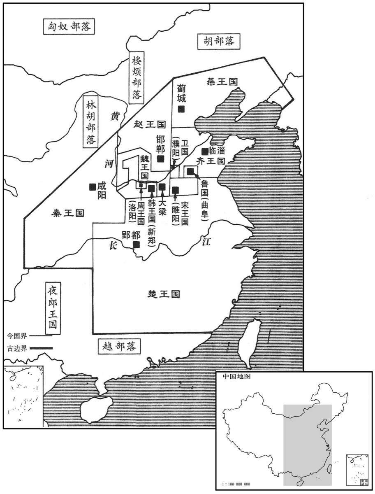
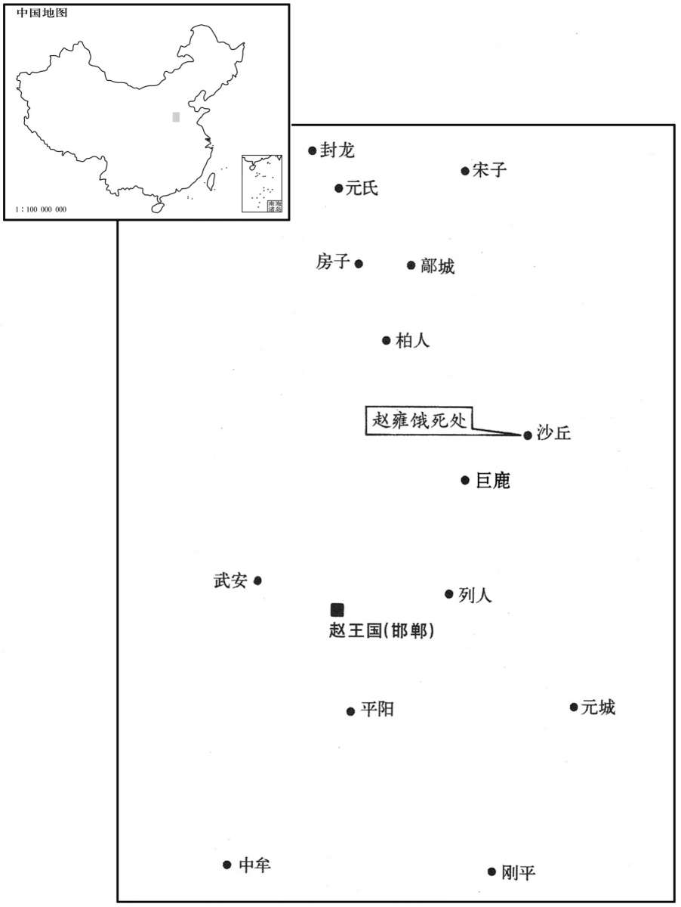
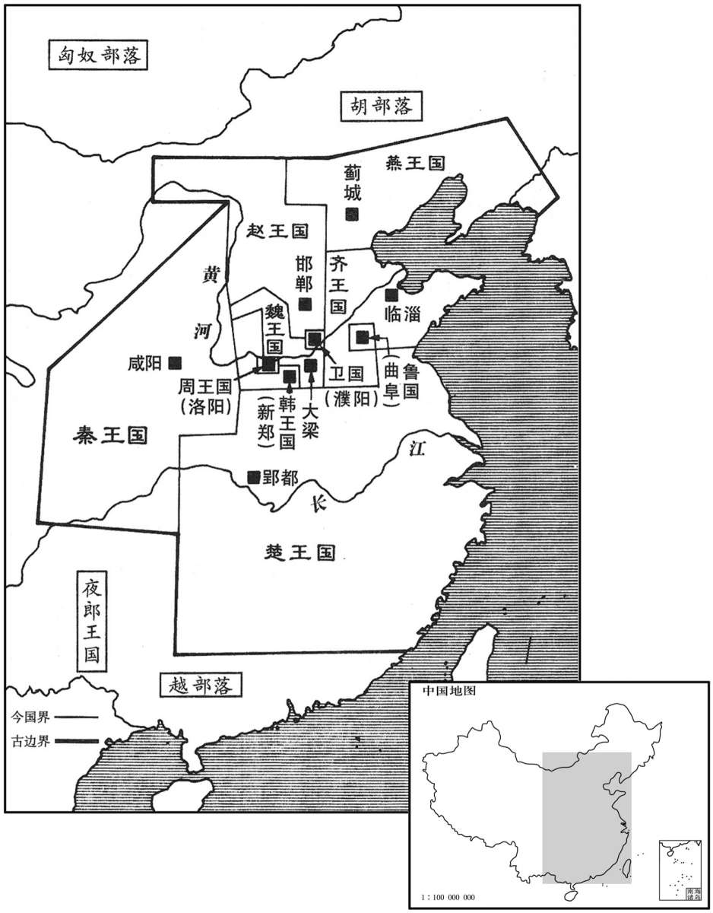
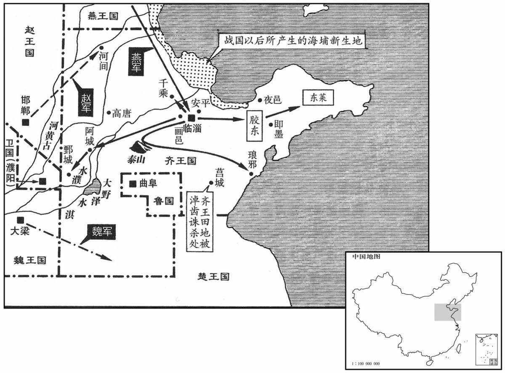
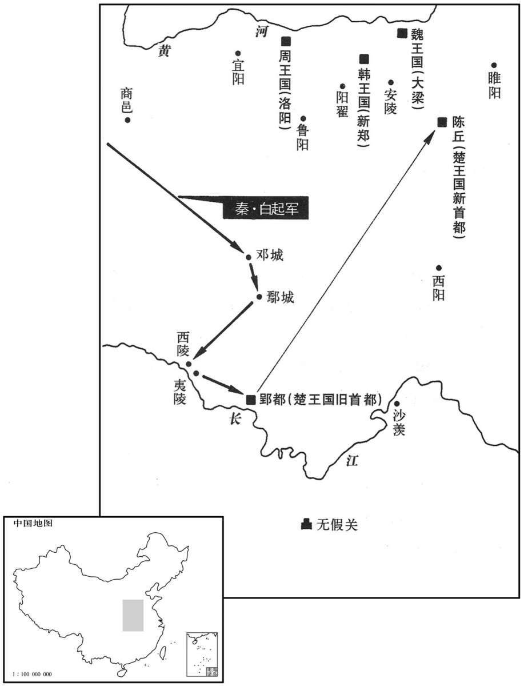
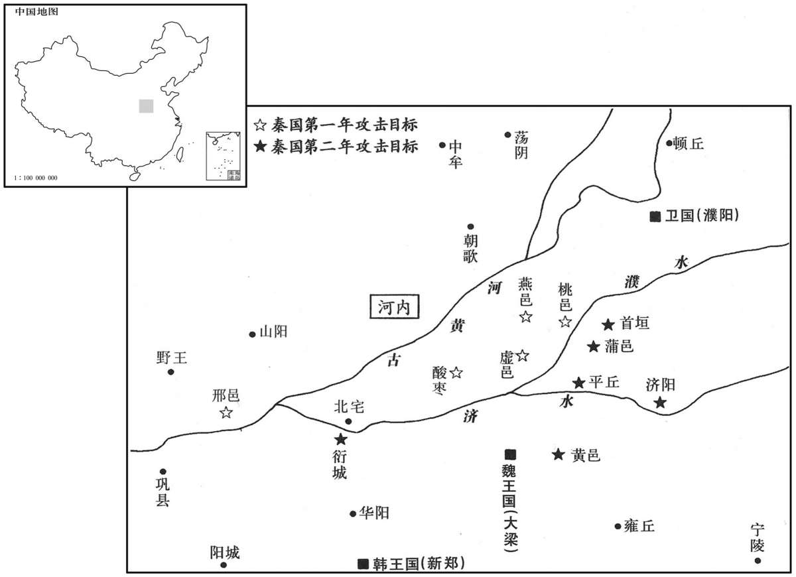

卷次与人物目录 / 卷4
资治通鉴 · 卷第四【周纪四】
公元前297年至公元前273年 · 原文、白话与胡三省注
本页按胡注本编排保存全卷内容。白话采用本站所据译本，未可靠对应的内容另列说明；事件标题用于定位，并非原书文字。
本卷共80段原文，80段有译文对应，0段缺译或待核对。
卷第四【周纪四】起阏逢困敦（甲子），尽着雍困敦（戊子），凡二十五年。
卷首原文与注释
赧王中
公元前297年 · 赧王在位第18年
十八年〔（甲子、前二九七）〕
本年事件索引（现代整理）
楚怀王亡归。秦人觉之，遮楚道。〔遮其归楚之路也。〕怀王从间道走赵。〔间，隙也，从空隙之路而行也。间，古苋翻。走，音奏，又音如字。〕赵主父在代，赵人不敢受。怀王将走魏，秦人追及之，以归。
楚怀王逃脱看守，被秦国人发现，封锁通往楚国的道路。楚怀王从小路逃到了赵国，正逢赵主父外出在代郡，赵国官员不敢作主收留他。楚怀王又想逃奔魏国，却被秦国人追上，抓回秦国。
鲁平公薨，子缗公贾立。〔世本“缗”作“闵”。〕
鲁国鲁平公去世，其子姬贾即位为鲁缗公。
公元前296年 · 赧王在位第19年
十九年〔（乙丑、前二九六）〕
楚怀王发病，薨于秦，秦人归其丧。〔丧，息郎翻。〕楚人皆怜之，如悲亲戚。诸侯由是不直秦。
楚怀王发病，死在秦国。秦国送回他的灵柩，楚国人见了都十分悲痛，像死了自己的亲人一样。各国诸侯因此也对秦国不满。
齐、韩、魏、赵、宋同击秦，至盐氏而还。〔括地志：盐氏故城，一名司盐城，在蒲州安邑县，掌盐池之官，因称盐氏。徐广曰：“盐”，一作“监”。〕秦与韩武遂、与魏封陵以和。〔十二年，秦取魏封陵，又取韩武遂，今皆归之以和。〕
齐、韩、魏、赵、宋五国共同出兵攻打秦国，到了盐氏地方即行撤回。秦国把武遂归还韩国，把封陵归还魏国，以求和解。
赵主父行新地〔赵新取中山之地也。行，于孟翻。〕遂出代；西遇楼烦王于西河而致其兵。〔赵北有林胡、楼烦之戎。汉雁门郡楼烦县，楼烦胡所居地。西河，即汉西河郡之地。〕
赵主父视察新获取的领土，离开代郡，向西在西河会见楼烦王，接受了他的部队。
魏襄王薨，子昭王立。〔世本曰：昭王，名遫。〕
魏国魏襄王去世，其子即位为魏昭王。
韩襄王薨，子厘王咎立。〔厘，读曰僖。〕
韩国韩襄王去世，其子韩咎即位为韩王。
公元前295年 · 赧王在位第20年
二十年〔（丙寅、前二九五）〕
秦尉错伐魏襄城。〔尉，盖国尉也。班志，襄城县属颍川郡。以分地考之，颍川属韩境。盖魏与韩分有颍川之地，用兵争强，疆场之间，朝韩暮魏，则此时襄城或为魏土，容亦有之。埸，音亦。〕
秦国国尉司马错进攻魏国襄城。
赵主父与齐、燕共灭中山，迁其王于肤施。〔燕，因肩翻。班志，肤施县属上郡；唐属延州，为州治所。〕归，行赏，大赦，置酒，酺五日。〔酺，音蒲。说文曰：王德布大饮酒也。师古曰：酺之为言布也。王德布于天下而合聚饮食为酺。师古注所云，汉法也。此言赵国内酺耳。赦者，宥有罪也。〕
赵主父与齐国、燕国联合灭掉中山国，把中山王迁到肤施居住。赵主父回来后，论功行赏，大赦罪人，设酒庆祝，全国欢宴五天。

赵主父封其长子章于代，号曰安阳君。〔长，知丈翻。班志，代郡有东安阳县。括地志：东安阳故城，在朔州定襄县界。〕安阳君素侈，心不服其弟。〔不服其弟为王也。〕主父使田不礼相之。〔相，息亮翻。〕李兑谓肥义曰：“公子章强壮而志骄，党众而欲大，田不礼忍杀而骄，二人相得，必有阴谋。夫小人有欲，轻虑浅谋，徒见其利，不顾其害，难必不久矣。〔夫，音扶。难，乃旦翻，下同。〕子任重而势大，乱之所始而祸之所集也。子何不称疾毋出而传政于公子成，毋为祸梯，〔梯，犹阶也，以木为之，以升高者也。祸梯，犹言祸阶也。梯，天黎翻。〕不亦可乎！”肥义曰：“昔者主父以王属义也，〔属，之欲翻。〕曰：『毋变而度，毋易而虑，〔而，犹汝也。〕坚守一心，以殁而世！』义再拜受命而籍之。〔记王命于籍也。〕今畏不礼之难而忘吾籍，变孰大焉！谚曰：『死者复生，生者不愧。』吾欲全吾言，安得全吾身乎！子则有赐而忠我矣。虽然，吾言已在前矣，终不敢失！”李兑曰：“诺，子勉之矣！吾见子已今年耳。”〔已，止也，言肥义命止于今年也。〕涕泣而出。
赵主父把长子赵章封到代，号称安阳君。
安阳君平素为人骄横，内心对弟弟立为王十分不服。赵主父派田不礼做他的国相。李兑对肥义说：“公子赵章身强力壮而怀有野心，党羽众多而贪欲极大，田不礼又残忍好杀，十分狂妄，两人互相勾结，必定会图谋不轨。小人有了野心，就要轻举妄动，他只看到想获取的利益，看不到带来的危害。一场灾难就在眼前了。你身居要职，权势很大，你将成为动乱的由头，灾祸也将集中在你身上。你何不称病不出，把朝政交给公子赵成去处理，免得被祸事牵连。这样不好吗！”肥义说：“当年赵主父把赵王嘱托给我，说：‘不要改变你的宗旨，不要改变你的心意，要坚守一心，至死效忠！’我再三拜谢承命并记录在案。现在如果怕田不礼加祸于我而忘掉当年的记录，就是莫大的背弃。俗话说崐：‘面对复生的死者，活着的人无需感到惭愧。’我要维护我的诺言，哪能光顾保全生命！你对我的建议是一片好心，但是我已有誓言在先，决不敢放弃！”李兑说：“好，你勉力而为吧！能见到你恐怕只有今年了。”说罢流泪而出。
李兑数见公子成以备田不礼。〔数见者，相与谋为之备也。数，所角翻。〕肥义谓信期曰：〔索隐曰：即下文高信也。史记正义曰：信，音申；康曰：如字。〕“公子章与田不礼声善而实恶，内得主而外为暴，〔得主，谓章为主父所怜也。〕矫令以擅一旦之命，不难为也。〔矫令，矫主父之令也。令，力正翻。擅，时战翻。〕今吾忧之，夜而忘寐，饥而忘食，盗出入不可以〔【章：十二行本无“以”字；乙十二行本同。】〕不备。〔言盗在主父左右，出入不可不备也。〕自今以来，有召王者必见吾面，我将以身先之，无故而后王可入也。”〔先，悉荐翻。〕信期曰：“善。”
李兑几次入见公子赵成，商议防备田不礼。肥义对信期说：“公子赵章与田不礼语言动听而本质凶恶，在内讨得主父的欢心，在外恣意施暴。他们一旦假借主父的命令来发动政变，是很容易得手的。现在我忧虑此事，已到了废寝忘食的程度。强盗在身边出入不能不防！从此以后，有人奉主父命来召见赵王必须先见我的面，我将先前往，没有变故，赵王才能去。”信期说：“好。”
主父使惠文王朝群臣而自从旁窥之，见其长子傫然也，〔朝，直遥翻。长，知丈翻。傫，伦追翻，懒懈貌。少子临朝而长子朝之，故其貌如此。〕反北面为臣，诎于其弟，〔诎，与屈同。〕心怜之，于是乃欲分赵而王公子章于代。〔王，于况翻，又音如字。〕计未决而辍。主父及王游沙丘，〔史记正义曰：沙丘在邢州平乡县东北二十里。余按沙丘台，纣所作也。班志云：沙丘在巨鹿郡巨鹿县东北七十里。〕异宫，〔异宫而处也。〕公子章、田不礼以其徒作乱，诈以主父令召王。肥义先入，杀之。高信即与王战。〔高信以王与公子章之徒战也。〕公子成与李兑自国至，〔赵都邯郸，自邯郸至也。邯郸，音寒丹。〕乃起四邑之兵入距难，〔距，犹拒也。难，乃旦翻。〕杀公子章及田不礼，减其党。公子成为相，号安平君，〔相，息亮翻。班志，涿郡有安平县，非赵地也。以公子成能平难而安国，故以为号。〕李兑为司寇。〔司寇，周六卿之一也，掌刑。〕是时惠文王少，〔少，时照翻。〕成、兑专政。
赵主父让赵惠文王朝见群臣，自己在旁边窥察，只见当哥哥的赵章反而俯首称臣，无精打采地听高高在上的弟弟赵何训示，心中有些不忍，于是想把赵国一分为二，让赵章在代郡称王，但这个计划还没有最后决定就搁置起来。赵主父和赵王出游沙丘，分别住在两个行宫里。赵章、田不礼乘机率领门徒作乱，他们假称赵主父的命令召见赵王，肥义先进去，被杀死。高信便与赵王一同抵抗。公子赵成与李兑从国都邯郸赶来，发动四邑的军队入宫镇压叛乱，杀死赵章及田不礼，处死全部党羽。公子赵成担任相国，称为安平君；李兑被任命为司寇。当时赵惠文王还年幼，政权都掌握在公子赵成、李兑手中。
公子章之败也，往走主父；主父开之。〔谓开宫门内之也。走，音奏。〕成、兑因围主父。〔【章：十二行本“父”下有“宫”字；乙十一行本同；孔本同；张校同；退斋校同。】〕公子章死，成、兑谋曰：“以章故，围主父；即解兵，吾属夷矣！”〔夷，诛也，灭也。〕乃遂围之，令：“宫中人后出者夷！”〔令，力正翻。〕宫中人悉出。主父欲出不得，又不得食，探雀鷇而食之。〔尔雅曰：生哺，鷇；生噣，雏。释云：辨鸟子之异名也，鸟子生而须母哺食者为鷇，谓燕、雀之属也。生而能自啄食者为雏，谓鸡、雉之属也。探，吐南翻。鷇，居候翻。〕三月余，饿死沙丘宫。主父定死，乃发丧赴诸侯。主父初以长子章为太子，后得吴娃，爱之，〔长，知丈翻。吴娃，谓吴广之女孟姚也，见上卷五年。吴、楚之间谓美女曰娃。娃，音于佳翻。〕为不出者数岁。〔为，于伪翻。〕生子何，乃废太子章而立之。〔何，即惠文王也。〕吴娃死，爱弛；怜故太子，欲两王之，犹豫未决，故乱起。
赵章败退的时候，逃到赵主父那里，赵主父开门接纳了他。公子赵成、李兑于是带兵包围了赵主父的行宫。杀死赵章后，公子赵成、李兑商议道：“我们为追杀赵章，竟包围了主父的行宫，如此大罪，要是撤兵回去，会被满门抄斩的！”于是又下令围住赵主父行宫，宣布：“宫中人晚出来的杀！”宫中的人听见命令全部逃出，赵主父想出来却不被准许，又得不到食物，只好捕捉幼鸟吃，三个多月后，他终于饿死在沙丘行宫中。直到赵主父确死无疑，赵国才向各国报告丧事。起初，赵主父定长子赵章为太子，后来他娶了美女吴娃，十分宠爱，曾经几年不出宫上朝。生下儿子赵何后，便废去太子赵章，立赵何为太子。吴娃死后，赵主父对赵何的偏爱也逐渐减退，又可怜起原来的太子，想立两个王。他总是犹豫不决，所以引起了内乱。

秦楼缓免相，魏冉代之。〔相，息亮翻。〕
秦国罢免楼缓的丞相，由魏冉代任。
公元前294年 · 赧王在位第21年
二十一年〔（丁卯、前二九四）〕
本年事件索引（现代整理）
秦败魏师于解。〔败，补迈翻。班志，解县属河东郡。宋白曰：解县地即夏鸣条之野，有盐池之利。后汉干佑元年蒲帅李茂贞奏置解州。师古曰：解，下买翻。〕
秦国在解击败魏国军队。
公元前293年 · 赧王在位第22年
二十二年〔（戊辰、前二九三）〕
本年事件索引（现代整理）
韩公孙喜、魏人伐秦。〔魏书人，其将微也。将，即亮翻。〕穰侯荐左更白起于秦王以代向寿将兵，〔白，姓也。春秋之时，秦有白乙丙。穰，人羊翻。更，工衡翻。向，息亮翻。〕败魏师、韩师于伊阙，斩首二十四万级，虏公孙喜，拔五城。秦王以白起为国尉。〔战国之时，有国尉，有郡尉。应劭曰：自上安下曰尉，武官悉以为称。败，补迈翻。〕
韩国派大将公孙喜联合魏国攻打秦国。秦国穰侯把任左更之职的白起推荐给秦王，代替向寿统率秦军，结果在伊阙大败韩、魏联军，杀死二十四万人，活捉公孙喜，夺取五座城。秦王便任命白起为国尉。
秦王遗楚王书曰：“楚倍秦，秦且率诸侯伐楚，愿王之饬士卒，〔饬，治也，整也。遗，于季翻。倍，蒲妹翻。〕得一乐战！”〔乐，音洛，快意也；言一战以快其意。〕楚王患之，乃复与秦和亲。〔和亲者，结和以相亲也。复，扶又翻，又音如字〕
秦王送信给楚王，写道：“楚国背叛了秦国，秦国将率领各国来讨伐楚国，希望你整顿好军队，我们痛痛快快地打一仗！”楚王十分恐惧，只好再与秦国修好结亲。
公元前292年 · 赧王在位第23年
二十三年〔（己巳、前二九二）〕
本年事件索引（现代整理）
楚襄王迎妇于秦。
楚襄王从秦国迎娶新娘。
史家评论 · 原文及其白话
臣光曰：甚哉秦之无道也，杀其父而劫其子；〔谓楚怀王留于秦而以困死，秦王复遗襄王书，以兵威劫之。〕楚之不竞也，〔杜预曰：竞，强也。或曰：竞，争也，言不能与秦争也。〕忍其父而婚其雠！〔谓楚襄王父死于秦，是仇雠之国也，忍耻而与之婚。〕乌呼，楚之君诚得其道，臣诚得其人，秦虽强，乌得陵之哉！善乎荀卿论之曰：“夫道，善用之则百里之地可以独立，不善用之则楚六千里而为雠人役。”〔夫，音扶。〕故人主不务得道而广有其势，是其所以危也。
臣司马光曰：秦国真是太不讲道理了，害死楚怀王又逼迫其子楚襄王；楚国也太不争气了，忍下杀父之仇而与敌人通婚！呜呼！楚国君王如果能坚持正确的治国之道，对臣下任用得人，秦国虽然强大，又怎能肆意欺凌它呢！荀况说得好：“治国之道，善于掌握则仅有百里方圆的地方也可以独立于天下，不善于掌握哪怕像楚国有六千里国土也只能被仇人所驱使。”所以君王不认真讲求治国之道，只一味制造声势，正是走向危亡的原因。
秦魏冉谢病免，以客卿烛寿为丞相。〔烛，姓也。左传，郑有大夫烛之武。〕
秦国魏冉因病辞去职务，以客卿烛寿为丞相。
公元前291年 · 赧王在位第24年
二十四年〔（庚午、前二九一）〕
本年事件索引（现代整理）
秦伐韩，拔宛。〔宛，故申伯国。班志，宛县属南阳郡；唐为邓州南阳县。宛，于元翻。〕
秦国进攻韩国，攻克宛。
秦烛寿免。魏冉复为丞相，〔相，息亮翻。〕封于穰与陶，谓之穰侯。又封公子市于宛，公子悝于邓。〔悝，苦回翻。〕
秦国免去烛寿职务，魏冉再度出任丞相，受封穰、陶两地，称为穰侯。秦国又把宛封给公子，把邓封给公子悝。
公元前290年 · 赧王在位第25年
二十五年〔（辛未、前二九○）〕
本年事件索引（现代整理）
魏入河东地四百里，〔河东地，盖安邑、大阳、蒲阪、解县濒河之地。阪，音反。解，下买翻。〕韩入武遂地二百里于秦。〔武遂地，十八年秦以予韩。予，读曰与。〕
魏国把河东地方圆四百里、韩国把武遂地方圆二百里献给秦国。
魏芒卯始以诈见重。〔芒，谟郎翻，姓也。卯，其名。〕
魏国芒卯以诈术开始受到重用。
公元前289年 · 赧王在位第26年
二十六年〔（壬申、前二八九）〕
本年事件索引（现代整理）
秦大良造白起、客卿错伐魏，至轵，取城大小六十一。〔大良造，即大上造之良者。大上造，秦十六爵。轵，音只。轵县，班志属河内郡；唐为孟州济源县。〕
秦国派大良造白起、客卿司马错进攻魏国，抵达轵地，夺取大小城镇六十一座。
公元前288年 · 赧王在位第27年
二十七年〔（癸酉、前二八八）〕
本年事件索引（现代整理）
冬，十月，秦王称西帝，遣使立齐王为东帝，欲约与共伐赵。苏代自燕来，〔使，疏吏翻。燕，因肩翻。〕齐王曰：“秦使魏冉致帝，子以为何如。”对曰：“愿王受之而勿称也。秦称之，天下安之，王乃称之，无后也。〔无后，犹言未晚。〕秦称之，天下恶之，〔恶，乌路翻。〕王因勿称，以收天下，此大资也。且伐赵孰与伐桀宋利。〔桀宋，见下二十九年。〕今王不如释帝以收天下之望，发兵以伐桀宋，宋举则楚、赵、梁、卫皆惧矣。是我以名尊秦而令天下憎之，〔令，卢经翻。〕所谓以卑为尊也。”〔古人有言曰：“自卑者人尊之。”〕齐王从之，称帝二日而复归之。〔归帝号而不称也。复，扶又翻，又音如字。〕十二月，吕礼自齐入秦。〔姓谱曰：太岳为禹心吕之臣，故封吕侯，后因以为氏。古字脊骨之膂本作“吕”。〕秦王亦去帝，复称王。〔去，羌吕翻，除也；后以义推。〕
冬季，十月，秦王自称西帝，派使者建议齐王立为东帝，想约定两国共同进攻赵国。苏代从燕国前来，齐王便问他：“秦国派魏冉来劝我帝，你的意见如何？”苏代回答说：“我建议大王先予以接受，但暂时不称帝。秦王称帝后，天下如果不表示反对，大王再称帝，也不算晚。秦王 称帝如果遭到天下指责，大王就不再称帝，趁势收买天下人心，这是个大资本。况且进攻赵国与进攻有夏桀恶名的宋国，哪个有利呢？现在大王不如暂时放弃帝号以使天下归心，然后发兵讨伐‘桀宋’，征服宋国后，楚国、赵国、魏国、卫国都会恐崐惧臣服。这样，我们名义上尊重秦国而让天下去憎恨它，正是齐国反卑为尊的计策。”齐王采纳了他的建议，只称帝两天便放弃了。十二月，吕礼从齐国到秦国，秦王也去掉帝号，仍旧称王。
秦攻赵，拔杜阳。〔徐广曰：“杜”，一作“梗”。按班志，梗阳在太原郡榆次县界，杜阳县属扶风，注云，杜水南入渭。诗曰“自土”。师古注云：棉诗：自土、沮、漆。齐诗作“自杜”，言公刘自狄而来居杜与沮、漆之地。又云：扶风旬邑有豳乡，公刘所都。审尔，则杜阳近旬邑，接上郡、北地之境。赵地西至上郡肤施，或者其时并有杜阳欤！沮，七余翻。旬，须伦翻。豳，彼贫翻。〕
秦国攻打赵国，攻克杜阳。
公元前287年 · 赧王在位第28年
二十八年〔（甲戌、前二八七）〕
本年事件索引（现代整理）
秦攻赵，〔【章：十二行本“赵”作“魏”；乙十一行本同；孔本同；张校同。】〕拔新垣、曲阳。〔史记正义曰：年表及括地志，曲阳故城在怀州济源县西四十里，新垣近曲阳，未详端的之处。余按班志，王屋山在河东垣县，沇水所出，东流为济。水经：济水出河东垣县王屋山为沇水。注云：济水重源出温西北平地。水有二源，东源出原城东北，晋文公以信降原，即此城也。俗以济水重源所发，因复谓之济源城。如此则济源去垣不远矣。盖新垣即河东之垣县也；以县有迁徙，谓其新邑为新垣也。垣，于元翻。济，子礼翻。沇，以转翻。降，户江翻。重，直龙翻。复，扶又翻。〕
秦国攻打赵国，夺取新垣、曲阳。
公元前286年 · 赧王在位第29年
二十九年〔（乙亥、前二八六）〕
本年事件索引（现代整理）
秦司马错击魏河内。〔汉河内郡即魏河内之地，秦并属河东郡。孟子记梁惠王曰：“河内凶则移其民于河东，移其粟于河内。”盖魏之有国，河东、河内自为二郡也。错，七各翻，又千故翻。〕魏献安邑以和，秦出其人归之魏。
秦国派司马错攻击魏国河内，魏国献出安邑求和，秦国将城内人民驱赶回魏国。
秦败韩师于夏山。〔败，补迈翻。夏，户雅翻。〕
秦国在夏山打败韩国军队。
宋有雀生（左鸟右旃）于城之陬。〔“（左鸟右旃）”，刘向说苑作“鹯”。字林曰：鹞属。陆玑曰：鹯似鹞，青黄色，燕颔向啄，向风摇翅，乃因风飞急疾，击鸠、鸽、燕、雀食之。陬，子侯翻，隅也。句，古侯翻。〕史占之〔史，太史之属，掌卜筮者。〕曰：“吉。〔凶人吉其凶。〕小而生巨，必霸天下。”宋康王喜，起兵灭滕，伐薛，〔班志：沛郡公丘县，古滕国。水经注：滕城在蕃县西。唐志，滕县属徐州。薛即孟尝君所封地。蕃，音皮，又音如字。〕东败齐，取五城，南败楚，取地三百里，西败魏军，与齐、魏为敌国，乃愈自信其霸。欲霸之亟成，故射天笞地，〔败，补迈翻。亟，己力翻。射，而亦翻；后以义推。笞，击也，音丑之翻。〕斩社稷而焚灭之，〔记曰：共工氏有子曰句龙，能平水土，故祀以为社。烈山氏之子曰柱，为稷，自夏以上祀之；周弃亦为稷，自商以来祀之。自汉以下，夏禹配食官社，后稷配食官稷。周礼注：社稷，土谷之神。共，读曰恭。夏，户雅翻。〕以示威服鬼神。为长夜之饮于室中，室中人呼万岁，则堂上之人应之，堂下之人又应之，门外之人又应之，以至于国中，无敢不呼万岁者。天下之人谓之“桀宋”。〔言其昏暴如桀也。〕齐闵王起兵伐之，民散，城不守。宋王奔魏，死于温。〔温，周司寇苏忿生之邑。班志，温县属河内郡。宋至此而灭。闵，读曰闵。〕
宋国发生雀鸟在城边生下鹞鹰的怪事，太史卜了一卦，说：“吉利。小而生大，必霸天下。”宋康王大喜，起兵灭掉滕国，攻占薛地，向东击败齐国，夺取五座城，向南战胜楚国，占地方圆三百里，向西打垮魏军，宋国一时成为可与齐国、魏国相匹敌的国家，宋康王对成就霸业更加自信。他想早日完成霸业，便射天鞭地，砍倒神坛后烧毁，以表示自己的声威可以镇慑鬼神。他在宫室中整夜饮酒，令室中的人齐声高呼万岁，大堂上的人闻声响应，堂下的人接着响应，门外的人又继续响应，以至于国中没有人敢不呼万岁。天下的人都咒骂他是“桀宋”。齐王趁机起兵征伐宋国，人民四下逃散，弃城不守。宋王只好逃往魏国，死于温地。

公元前285年 · 赧王在位第30年
三十年〔（丙子、前二八五）〕
本年事件索引（现代整理）
秦王会楚王于宛，〔宛，于元翻。〕会赵王于中阳。〔班志，中阳县属西河郡。水经注：文水迳太原兹氏县故城之东，潴为文湖；文湖水又东迳中阳县故城东。〕
秦王与楚王在宛相会，与赵王在中阳相会。
秦蒙武击齐，拔九城。〔风俗通：东蒙主以蒙山为氏。〕
秦国派蒙武攻击齐国，夺取九座城。
齐闵王既灭宋而骄，乃南侵楚，西侵三晋，欲并二周，为天子。狐咺正议，斮之檀衢。〔狐，姓也。春秋之时，晋有狐突、狐毛、狐偃父子。左传：齐简公与妇人饮酒于檀台。檀衢，意其地为通檀台之衢路也。尔雅：四达谓之衢。咺，况晚翻，又况远翻。斮，侧略翻，斩也。〕陈举直言，杀之东闾。〔左传：晋围齐，州绰门于东闾。杜预注曰：齐东门。〕
齐王灭掉宋国后十分骄傲，便向南侵入楚国，向西攻打赵、魏、韩国，想吞并东西二周，自立为天子。狐义正辞严地劝谏他，被斩首于檀台大路上。陈举直言不讳地劝止，被杀死在东门。
燕昭王日夜抚循其人，益以富实，〔燕，因肩翻。〕乃与乐毅谋伐齐。乐毅曰：“齐，霸国之余业也，〔毅，鱼器翻。自齐桓公霸天下，国以强大；田氏藉其余业。〕地大人众，未易独攻也。〔易，弋豉翻。〕王必欲伐之，莫如约赵及楚、魏。”于是使乐毅约赵，别使使者连楚、魏，且令赵嚪秦以伐齐之利。〔使者，上疏吏翻。令，力丁翻。以利诱之曰嚪。嚪，音田滥翻。诱，羊久翻。〕诸侯害齐王之骄暴，皆争合谋与燕伐齐。〔燕，因肩翻。〕
燕昭王却日夜安抚教导百姓，使燕国更加富足，于是他与乐毅商议进攻齐国。乐毅说：“齐国称霸以来，至今有余力，地广人多，我们独力攻打不易。大王一定要讨伐它，不如联合赵国及楚、魏三国。”燕王便派乐毅约定赵国，另派使者联系楚国、魏国，再让赵国用讨伐齐国的好处引诱秦国。各国苦于齐王的骄横暴虐，都争相赞成参加燕国的攻齐战争。
本段人物：乐毅
公元前284年 · 赧王在位第31年
三十一年〔（丁丑、前二八四）〕
本年事件索引（现代整理）
燕王悉起兵，以乐毅为上将军。〔上将军，犹春秋之元帅。帅，所类翻。〕秦尉斯离帅师与三晋之师会之。〔尉，秦官也。斯离，其名。或曰：斯，姓也，离，名也。斯，蜀之西南夷种，遂以为姓。帅，读曰率。〕赵王以相国印授乐毅，乐毅并将秦、魏、韩、赵之兵以伐齐。齐闵王悉国中之众以拒之，战于济西，〔相，息亮翻。将，即亮翻。闵，读曰闵。水经：济水东北过寿张县西界，北迳须昌、谷城、临邑县西，又北迳北平、阴城西，又东北过卢县北，皆齐地也。济西地在济水之西。济，子礼翻，下同。〕齐师大败。乐毅还秦、韩之师，分魏师以略宋地，部赵师以收河间。〔秦、韩与齐隔远，故先还其师。宋地近于魏，故使略之。河间近于赵，故以方略部赵取之。此其部分，非人所能及也。宋地，齐灭宋所取之地。〕身率燕师，长驱逐北。剧辛曰：“齐大而燕小，〔燕，因肩翻。剧，竭戟翻。〕赖诸侯之助以破其军，宜及时攻取其边城以自益，此长久之利也。〔剧，竭戟翻，姓也。〕今过而不攻，以深入为名，无损于齐，无益于燕而结深怨，后必悔之。”乐毅曰：“齐王伐功矜能，谋不逮下，废黜贤良，信任谄谀，政令戾虐，百姓怨怼。〔怼，直类翻。〕今军皆破亡，若因而乘之，其民必叛，祸乱内作，则齐可图也。若不遂乘之，待彼悔前之非，改过恤下而抚其民，则难虑也。”遂进军深入。齐人果大乱失度，〔难虑，谓难为计虑也。失度，失其常度也。〕闵王出走。乐毅入临淄，取宝物、祭器，输之于燕。燕王亲至济上劳军，行赏飨士；〔燕，因肩翻。济，子礼翻。劳，力到翻。〕封乐毅为昌国君，〔班志，昌国县属齐郡。封毅为昌国君，以其能昌大燕国也。〕遂使留徇齐城之未下者。
燕王调动全部兵力，以乐毅为上将军。秦国尉斯离率军队与韩、赵、魏联军也前来会合。赵王把相国大印授给乐毅，乐毅统一指挥秦、魏、韩、赵大军发动进攻。齐王集中国内全部人力进行抵御，双方在济水西岸大战。齐国军队大败。乐毅便退回秦国、韩国军队，令魏国军队分兵进攻宋国旧地，布署赵国军队去收复河间。自己率领燕军，由北长驱直入齐国。剧辛劝说道：“齐国大，燕国小，依靠各国的帮助我们才打败齐军，应该及时地攻取边境城市充实燕国领土，这才是长久的利益。现在大军过城不攻，一味深入，既无损于齐国又无益于燕国，只能结下深怨，日后必定要后悔。”乐毅说：“齐王好大喜功，刚愎自用，不与下属商议，又罢黜贤良人士，专门信任谀谄小人，政令贪虐暴戾，百姓十分怨愤。现在齐国军队已溃不成军，如果我们乘胜追击，齐国百姓必然反叛，内部发生动乱，齐国就可以收拾了。如果不抓住时机，等到齐王痛改前非，体贴臣下而抚恤百姓，我们就难办了。”于是下令进军深入齐国。齐国果然大乱，失去常度，齐王出逃。乐毅率军进入齐都临淄，搜刮宝物和祭祀重器，运回燕国。燕王亲自到济水上游去慰劳军队，颁行奖赏，犒劳将士；燕王封乐为昌国君，让他留在齐国进攻其余未克的城市。
本段人物：乐毅

齐王出亡之卫，卫君辟宫舍之，称臣而共具。〔辟，读曰避。共，音供，又居用翻。〕齐王不逊，卫人侵之。齐王去奔邹、鲁，有骄色；邹、鲁弗内，遂走莒。〔莒，春秋莒子之国，齐灭之。班志，莒县属城阳国，国都也。宋白曰：周武王封少昊之后嬴姓兹舆于莒，始都计斤城，在今高密县东南四十里。春秋时徙于莒。隐公二年，莒人入向。注云：今城阳莒县。莒自初封二十三君，为楚简王所灭。汉为莒县，城阳王所都。莒，音居御翻。〕楚使淖齿将兵救齐，因为齐相。淖齿欲与燕分齐地，〔索隐曰：淖，女教翻；康曰：竹角切；姓也。相，息亮翻。〕乃执闵王而数之〔数其罪也。师古曰：数，所具翻，宋祁曰：所主翻。〕曰：“千乘、博昌之间，方数百里，雨血沾衣，〔汉置千乘郡，博昌县属焉。后汉更千乘郡为乐安国。十三州志曰：昌水，其势平，故曰博昌。唐志，千乘、博昌二县皆属青州。乘，绳证翻。雨，于遇翻。自上而下曰雨。〕王知之乎？”曰：“知之。”“嬴、博之间，地坼及泉，〔班志，嬴、博二县属泰山郡。〕王知之乎？”曰：“知之。”“有人当阙而哭者，求之不得，去则闻其声，王知之乎？”曰：“知之。”淖齿曰：“天雨血沾衣者，天以告也；地坼及泉者，地以告也；有人当阙而哭者，人以告也。天、地、人皆告矣，而王不知诫焉，〔诫，与戒同；戒，警敕也。毛晃曰：警敕之辞曰诫。此言天、地、人皆以相警敕也。〕何得无诛！”遂弑王于鼓里。〔鼓里，莒中地名，近齐庙。〕
齐王出逃到卫国，卫国国君让出宫殿给他居住，向他称臣并供给日常用度。齐王却傲慢不逊，卫国人气愤地攻击他，齐王又出奔到邹、鲁国，仍旧面有骄色；邹、鲁两地闭门不纳，齐王又出奔莒地。楚国派淖齿率军前来救援齐王，被任命为齐相。淖齿却想与燕国瓜分齐国，于是抓住齐王数说他的罪过：“千乘、博昌之间的方圆几百里地，下血雨浸湿衣服，你齐王知道吗？”齐王回答：“知道。”“嬴、博之间，大地崩塌，泉水上涌，你齐王知道吗？”回答：“知道。”“有人堵着宫门哭泣，却不见人影，离开时又音响可闻，齐王你知道吗？”回答：“知道。”淖齿说：“天降血雨，是上天警告你；地崩泉涌，是大地警告你；人堵着宫门哭，是人心在警告你。天、地、人都警告，而你却不知改悔，你还想不死吗！”于是在鼓里这个地方将齐王处死。
史家评论 · 原文及其白话
荀子论之曰：国者，天下之利势也。得道以持之，则大安也，大荣也，积美之源也。不得道以持之，则大危也，大累也，〔累，力伪翻，事相缘及也。〕有之不如无之；及其綦也，〔齐人谓极为綦，音其；下綦之同。〕索为匹夫，不可得也。〔索，山客翻，求也。〕齐闵、宋献是也。〔闵，读曰闵。宋献，意即指宋康王。〕故用国者义立而王，信立而霸，权谋立而亡。
荀况论之曰：国家，集中了天下的利益和权势。有道行的人主持，可以得到大的安乐，大的荣耀，成为幸福的源泉。无道行的人主持，却带来大的危险，大的拖累，有君王的地位还不如没有；等到形势极度恶化，他即使想当一个普通老百姓，也做不到了。齐王、宋康王便是如此。
所以治理国家的君主如果提倡礼义，就可以称王，树立信誉就可以称霸，玩弄权术则必然灭亡。
挈国以呼礼义，而无以害之。〔挈，即提挈之挈，音诘结翻。〕行一不义，杀一无罪，而得天下，仁者不为也。擽然扶持心国，且若是其固也。〔擽然，落石貌；言其持心持国，擽然如石之固。擽，历各翻。〕之所与为之者之人，则举义士也。之所以为布陈于国家刑法者，则举义法也。主之所极然，〔毛晃曰：然，如也，是也。〕帅群臣而首向之者，则举义志也。〔帅，读曰率。首，所救翻。志者，心之所主也。〕如是，则下仰上以义矣，〔仰，鱼亮翻。凡仰给、仰成之仰皆同音。〕是基定也。基〔【章：乙十一行本，二“基”字均作“綦”。】〕定而国定，国定而天下定。故曰：以国济义，一日而白，汤、武是也。〔基，址也，本也。为土立址曰基；为木立根本亦曰基。白，明也。〕是所谓义立而王也。
领导国家提倡礼义，就无人可以加害于他。即使做一件坏事、杀一个无辜的人便可以得到天下，仁爱的人也不会去干。君主守定意志，维护国家，坚如磐石，以此礼待他人，就可以产生众多的仁人志士。以此条陈布置国家刑事法律，就可以制定出良好的法律。君主极力如此主张，再率领群臣以身作则，就可以树立起礼义的风尚。这样，属下能够以礼义纲常尊崇上司，统治基础就稳定了，基础稳定国家便安定，国家安定则天下平定。因此说：用国家的权力推行礼义，一天就可以做到众人皆知，商汤王、周武王便是如此，即所谓的以提倡礼义而称王。
德虽未至也，义虽未济也，然而天下之理略奏矣，〔杨倞曰：略有节奏也。〕刑赏已诺信于天下矣，〔诺，人应声也。信，人不疑而心孚也。〕臣下晓然皆知其可要也。〔要，一遥翻，约也，勤也，求也。〕政令已陈，虽利败，不欺其民；〔令，力正翻。〕约结已定，虽睹利败，不欺其与；〔与，党与也。即下文所谓与国也。〕如是，则兵劲城固，敌国畏之；国一綦明，〔杨倞曰：此“綦”当作“基”。今谓此“綦”字从上注，所谓齐人之言，其义亦通。明，显也。〕与国信之。虽在僻陋之国，威动天下，五伯是也。是所谓信立而霸也。〔伯，读曰霸。五霸，夏昆吾，商大彭、豕韦，周齐桓、晋文。或曰：齐桓、晋文、宋襄、秦穆、楚庄为五霸。〕
即使道德还未达到完美，礼义也没有做到完善，然而已经可以掌握治理天下的大致条理。做到赏罚分明，取得天下的信任，使臣属清楚地看到它的重要性。政令一经颁布，不管成功还是失败，都不欺骗百姓；条约已经缔结，不管有利还是无利，都不欺骗合作的邻国。这样，才能军队强劲，城池坚固，使敌对国家畏惧。国家的方针一贯而明确，友邦就予以信任。即使是偏僻的小国，也可以威震天下。春秋时期的齐、晋、宋、秦、楚五霸主便是如此，即所谓的以树立信誉而称霸。
挈国以呼功利，不务张其义，齐其信，唯利之求。内则不惮诈其民而求小利焉，外则不惮诈其与而求大利焉。内不修正其所以有，然常欲人之有，如是，则臣下百姓莫不以诈心待其上矣。上诈其下，下诈其上，则是上下析也。〔析，先的翻，分也，离也。〕如是，则敌国轻之，与国疑之，权谋日行而国不免危削，綦之而亡，齐闵、薛公是也。〔闵，读曰闵。薛公，谓孟尝君。孟尝君卒，齐与诸侯共灭薛。卒，子恤翻。〕故用强齐，非以修礼义也，非以本政教也，非以一天下也，绵绵常以结引驰外为务。〔引，读曰靷，音羊晋翻。丁度曰：靷，驾牛具，在胸曰靷，盖驾马亦用靷也。〕故强，南足以破楚，西足以诎秦，北足以败燕，中足以举宋，〔史记，齐闵王十年，伐燕，取之；二十三年，与秦败楚于重丘，南割楚之淮北；三十六年，与韩、魏攻秦，至函谷；三十八年，伐宋灭之。通鉴据孟子以取燕事属之齐宣王。败，补迈翻。诎，与屈同，音渠勿翻。燕，因肩翻。〕及以燕、赵起〔【章：十二行本“起”作“改”；孔本同。】〕而攻之，若振槁然，〔燕，因肩翻。槁，枯木也。振，摇也。振已枯之木，则枝叶摧落而本根拨矣。槁，苦皓翻，又音古老翻。〕而身死国亡，为天下大戮，后世言恶则必稽焉。〔稽，考也，又计校也。〕是无他故焉，唯其不由礼义而由权谋也。
带领国家追逐功利，不申张正义，不遵守信用，唯利是图；对内不惜为 了一点小利去欺骗人民，对外为了追求大的利益不怕欺骗友邦。对内不好好治理自己已有的东西，却常常觊觎别人的成果。这样，臣下百姓就无不以奸诈之心对待上司。上欺下，下瞒上，于是上下关系分崩离析。这样，便使敌对国家轻视，友好国家不信任，权术泛滥而国家日益削弱，走向极端，终于灭亡，齐王、孟尝君便是如此。齐王要强大齐国，不去提倡礼义，不去修明政治，不去统一天下的思想，只是成年累月地骑马在外面征战。所以齐国强大的时候，向南能够打败楚国，向西能够逼迫秦国，向北可以战胜燕国，在中原能够征服宋国。然而燕国、赵国一旦群起而攻齐，便如摧枯拉朽。齐王身死国亡，成为天下共同声讨的对象，后世提起暴君总要举他为例。这不是别的原因，就是因为他不崇尚礼义而沉溺权术。
三者，明主之所谨择也，仁人之所务白也。〔白，明白也。〕善择者制人，不善择者人制之。
以上三种，贤明的君王必须慎重地加以抉择，仁人志士必须认真地予以辨明。善于抉择的人可以控制别人，不善于抉择的人则被别人控制。
乐毅闻昼〔【章：乙十一行本作“画”；孔本同；下均同。】〕邑人王蠋贤，〔刘熙曰：画，齐西南近邑，音获。索隐曰：音胡卦翻。括地志：戟里城在临淄城西北三十里，春秋时棘邑。又云：澅邑，蠋所居，即此邑，因澅水为名也。京相璠曰：今临淄有澅水，西北入沛，即班志所谓如水；如、时声相似，然则澅水即时水也。余按后汉耿弇攻张步，进军画中，在临淄、西安二邑之间。“蠋”，班固古今人表作“歜”，音触。据“蠋”字则当音蜀，或音之欲翻；康珠玉切。通鉴以画邑为昼邑，以孟子去齐宿于昼为据也。若以孟子为据，则昼读如字。〕令军中环昼邑三十里无入。〔环，据汉书音义音宦。〕使人请蠋，蠋谢不往。燕人曰：“不来，吾且屠昼邑！”蠋曰：“忠臣不事二君，烈女不更二夫。〔【章：十二行本“夫”下有“齐王不用吾谏故退而耕于野”十二字；乙十一行本同；孔本同；张校同；退斋校同。】〕〔燕，因肩翻。蠋，音蜀。更，工衡翻。〕国破君亡，吾不能存，而又欲劫之以兵；吾与其不义而生，不若死！”遂经其颈于树枝，自奋绝脰而死。〔经，绞也，缢也。颈，居郢翻，头茎也。自奋，自奋起而还掷也。脰，大透翻，颈也。〕燕师乘胜长驱，齐城皆望风奔溃。乐毅修整燕军，禁止侵掠，求齐之逸民，显而礼之，宽其赋敛，〔敛，力验翻；后以义推。〕除其暴令，修其旧政，〔【章：孔本“政”作“制”。】〕齐民喜悦。乃遣左军渡胶东、东莱；〔胶东，汉为王国。水经：胶水出琅邪黔陬县胶山，北过胶东、下密，又北过东莱当利县入海。胶水之东为胶东国，胶水之西为胶西国。东莱，春秋莱子之国，汉置东莱郡。邪，音耶。〕前军循泰山以东至海，略琅邪；〔琅邪，秦置为郡，其地东至海，南距淮。〕右军循河、济，屯阿、鄄以连魏师；〔河济注已见一卷安王十五年，然仅及济水入河而溢为荥一节。今据水经：济水自荥泽东流至济阴乘氏县西，分为二渎：其南渎为菏水，东南流至山阳湖陆县，与泗水合。其北渎东北流入于巨野泽，东北过东郡寿良县西界，北迳须昌、谷城至临邑县四渎津口，与河水合。此盖言齐地在河、济之间者也。参考上济西注可见。济，子礼翻。阿，东阿；鄄，鄄城。鄄，音绢。乘，绳证翻。菏，音柯。〕后军旁北海以抚千乘：〔旁，步浪翻。自临淄东北至海，北海地也。汉置郡。乘，绳证翻。〕中军据临淄而镇齐都。祀桓公、管仲于郊，表贤者之闾，封王蠋之墓。〔王蠋墓盖在昼。〕齐人食邑于燕者二十余君，〔封为君也。〕有爵位于蓟者百有余人。〔蓟，燕都也。班志，蓟县属广阳国。唐为幽州治所；今为燕京。水经注：蓟城西北隅有蓟丘，故名。燕，因肩翻。蓟，音计。〕六月之间，下齐七十余城，皆为郡县。
乐毅听说昼邑人王贤良，下令围绕昼邑三十里周围不得进入军队，又派人请王，王辞谢不去。燕国人威胁说：“你要是不来，我们就在昼邑屠城！”王叹息说：“忠臣不事二君，烈女不更二夫。国破君亡，我不能使崐之保存，而自身又被燕人逼迫，我与其苟且偷生，不如一死！”于是把脖子系在树枝上，纵身一跃，自尽而死。燕国军队乘胜长驱直入，齐国大小城市望风崩溃。乐毅整肃燕军纪律，禁止侵掠，寻访齐国的隐士高人，致以荣誉礼待。还放宽人民赋税，革除苛刻的法令，恢复齐国旧的良好传统，齐国人民都十分喜悦。乐毅于是调左军在胶东东莱渡过胶水；前军沿泰山脚下向东到达渤海，进攻琅邪；右军循着黄河、济水而下，屯扎在东阿、鄄城，与魏国军队相连；后军沿北海镇抚千乘，中军占据临淄，镇守齐国国都。他还亲至城郊祭祀齐桓公、管仲，表彰齐国的贤良人才，赐封修治王的陵墓。经过收敛人心，齐国人接受燕国所封君号、领取俸禄的有二十余人；接受燕国爵位的有一百多人。六个月之内，燕军攻下齐国七十余座城，都设立郡县治理。
本段人物：乐毅
秦王、魏王、韩王会于京师。
秦王、魏王、韩王在周朝京师相会。
公元前283年 · 赧王在位第32年
三十二年〔（戊寅、前二八三）〕
秦、赵会于穰。秦拔魏安城，〔班志，安成县属汝南郡。司马彪志作“安城”。时魏地南至汝南，秦自武关出兵攻拔之。括地志：安城在豫州汝阳县东南十七里。一曰：在豫州吴房县东南。穰，人羊翻。〕兵至大梁而还。〔还，音旋。〕
秦国、赵国在穰地举行会议。秦国攻克魏国安城，一直打到魏国首都大梁才退回。
齐淖齿之乱，闵王子法章变姓名为莒太史敫家佣。〔淖，女教翻。闵，读曰闵。徐广曰：敫，音跃，一音皎；康吉了切。余按班书王子侯表有“敫”字，师古曰：古穆字；今从之。佣，雇身为人力作。为，于伪翻。〕太史敫女奇法章状貌，以为非常人，怜而常窃衣食之，〔窃，私也，私为之而不使人知。衣，于既翻。食，祥吏翻。〕因与私通。王孙贾从闵王，失王之处，其母曰：“汝朝出而晚来，则吾倚门而望；汝暮出而不还，则吾倚闾而望。〔闾，里门也。周礼：二十五家为闾。〕汝今事王，王走，汝不知其处，汝尚何归焉！”王孙贾乃入市中呼曰：〔呼，火故翻，叫号也。号，户高翻。〕“淖齿乱齐国，杀闵王。欲与我诛之者袒右！”〔袒右肩也。〕市人从者四百人，与攻淖齿，杀之。于是齐亡臣相与求闵王子，欲立之。法章惧其诛己，久之乃敢自言，遂立以为齐王，保莒城以拒燕，〔燕，因肩翻。〕布告国中曰：“王已立在莒矣！”〔其时乐毅以燕中军镇临淄，法章已立而保莒。田单自安平保即墨，奔败之余，犹可置之不问，法章布告国中，自言已立在莒，可安坐而不问乎！后人论乐毅，以为善藏其用，吾未敢以为然也。〕
齐国发生淖齿杀王之乱时，齐王的儿子田法章改名易姓躲到莒地太史敫家做雇工。太史敫的女儿惊奇田法章的像貌伟岸，认为不是普通人的气质，便可怜他，常常私下送给他衣服和食物，久而久之，两人已暗中结为夫妻。王孙贾是齐王的随臣，乱中找不到主子的下落，他的母亲说：“你早出晚归，我倚着大门盼望；你夜出不回，我靠着街门等待。你如今服侍君王，君王离开了，你却不知道他的下落，你还回来做什么！”王孙贾便来到集市振臂高呼：“淖齿搞乱齐国，杀害王。愿意和我一起去干掉他的就把右臂伸出来！”集市上的人有四百多人随他前去攻击淖齿，把他杀掉了。于是齐国的大臣们四下搜寻齐王的儿子，想立他为王。田法章害怕人们加害自己，过了很久才敢自己说明身份，于是大家拥立他为齐王，坚守莒城以抵抗燕军。在全国宣布：“齐王已经在莒地即位了！”
赵王得楚和氏璧，〔楚人卞和得玉璞，献之楚厉王，王使玉人视之，曰：“石也”；王以和为诈，则其左足。及武王立，和又献之，玉人又曰：“石也；”王又以为诈而刖其右足。及文王立，和乃抱璞而泣于荆山之下，王闻之，使玉人理其璞，而得宝，因命曰“和氏之璧”。尔雅：肉倍好谓之璧；外圆象天，内方象地。〕秦昭王欲之，请易以十五城。赵王欲勿与，畏秦强；欲与之，恐见欺。以问蔺相如，〔姓谱曰：韩献子玄孙曰康，食采于蔺，因氏焉。蔺，力刃翻。〕对曰：“秦以城求璧而王不许，曲在我矣。我与之璧而秦不与我城，则曲在秦。均之二策，宁许以负秦。〔使秦负曲也。〕臣愿奉璧而往；使秦城不入，臣请完璧而归之！”赵王遣之。相如至秦，秦王无意偿赵城。相如乃以诈绐秦王，复取璧，〔偿，辰羊翻。绐，荡亥翻，欺也，诳也。〕遣从者怀之，间行归赵，〔从，才用翻。间，古苋翻。〕而以身待命于秦。秦王以为贤而弗诛，礼而归之。赵王以相如为上大夫。
赵王得到楚国宝玉和氏璧，秦昭王想要，愿意用十五座城来交换。赵王想不给他，又畏惧秦国的强大；给他，又怕被秦王欺骗。便征求蔺相如的意见。蔺相如回答说：“秦国用城来换宝玉而大王不允许，是我们理屈。而我们给他宝玉，他不给我们城，是秦国理屈。衡量两种办法，我看宁可让秦国在道义上有负于我们。我愿护持宝玉前去，假如秦国不交出城来，我一定能完璧归赵。”赵王便派他前往。蔺相如到了秦国，看出秦王并无真意用城来换赵国的宝玉，就哄骗秦王，取回和氏璧，派随从藏在怀中，从小道潜回赵国，而他自己留下来听任秦王的处置。无奈之际，秦王只好称赞蔺相如的贤能，不但不杀他，反而以礼相待，送他回国。蔺相如回到赵国，赵王封他为上大夫。
本段人物：蔺相如
卫嗣君薨，子怀君立。嗣君好察微隐，县令有发褥而席弊者，〔嗣，祥吏翻。好，呼到翻。令，力正翻。古者县大夫，至春秋时有邑大夫。县令，起于战国之时，秦、汉因之。〕嗣君闻之，乃赐之席。令大惊，以君为神。又使人过关市，赂之以金，〔此盖赂掌关市之官。周礼：司关掌国货之节，以联门市，司货贿之出入者，掌其治禁与其征廛；司市掌市之治教政刑，量度禁令。战国之时，合为一官。量，音亮。〕既而召关市，问有客过与汝金，汝回遣之；〔回遣，谓还其金也。〕关市大恐。又爱泄姬，重如耳，而恐其因爱重以壅己也，〔泄，姓也，与泄同，春秋时郑有大夫泄驾，陈有大夫泄冶。如，亦姓也；张守节以如耳为魏大夫姓名，非也，盖卫大夫。是时魏王有如姬。重，音轻重之重。〕乃贵薄疑以敌如耳，〔薄，姓也；风俗通，卫贤人薄疑。敌，当也。〕尊魏妃以偶泄姬，〔偶，匹也，对也。〕曰：“以是相参也。”〔参，三也，相参列也，间厕也。〕
卫国卫嗣君去世，其子即位为卫怀君。卫嗣君在位时喜好侦察别人的崐隐私。有个县令曾掀开褥子，露出下面的破席子。卫嗣君听说了，便赏赐给他一领新席。县令大惊，以为国君料事如神。卫嗣君还曾派人经过关卡，用金钱贿赂掌关的官员。事后把掌关官员召来，指令说有客人过关时给了你金了，你快退回去。掌关官员十分惊恐。卫嗣君还宠爱泄姬，器重臣子如耳，但又怕这两人因受到宠爱器重而敢于欺瞒自己，于是提升另一个臣子薄疑来与如耳匹敌，尊崇魏妃来与泄姬分庭抗礼，说：“以此可互相参列比较。”
史家评论 · 原文及其白话
荀子论之曰：成侯、嗣君，聚敛计数之君也，未及取民也。子产，取民者也，未及为政也。管仲，为政者也，未及修礼也。故修礼者王，为政者强，取民者安，聚敛者亡。〔敛，力艳翻。〕
荀况论曰：卫成侯和卫嗣君，都是斤斤计较的小器量国君，没有做到招揽民心。郑国大臣子产，能招揽民心，但没有做到为政精明。齐国大臣管仲，能为政精明，但没有做到倡导礼义。由此而见，倡导礼义的人才能称王，治政精明的人可以使国家富强，招揽民心的人可以使国家安定，而搜刮者只能灭亡。
公元前282年 · 赧王在位第33年
三十三年〔（己卯、前二八二）〕
本年事件索引（现代整理）
秦伐赵，拔两城。
秦国攻打赵国，夺取两座城。
公元前281年 · 赧王在位第34年
十四年〔（庚辰、前二八一）〕
上传胡注本年头写作“十四年”，同一处公元前年份为前281年。本页按该年份与在位年序显示为第34年；保留原文件年头。
秦伐赵，拔石城。〔史记正义曰：地理志，右北平有石城县。括地志：石城在相州林虑县西南九十里。疑相州石城是。余谓北平之石城，燕境也，相州之石城，魏境也，皆非赵地。此石城即汉西河之离石县城；拓拔魏分西河，置五城郡，又置石城县，盖此地是也。相，息亮翻。虑，音庐。燕，因肩翻。〕
秦国又攻打赵国，夺取石城。
秦穰侯复为丞相。〔穰，人羊翻。复，扶又翻。〕
秦穰侯魏冉再任丞相。
楚欲与齐、韩共伐秦，因欲图周。王使东周武公谓楚令尹昭子曰：“周不可图也。”〔令尹，楚上卿，执其国之政，犹秦之丞相也。令，力正翻。〕昭子曰：“乃图周，则无之；虽然，何不可图？”武公曰：“西周之地，绝长补短，不过百里。名为天下共主，〔言天下共宗周以为诸侯主。杜佑曰：洛阳，古成周之地。今洛阳城东三十余里故城，是周之下都也。晋帅诸候城之，以居敬王。至孝王封其弟桓公于河南以续周公之官职，至孙惠公乃封少子于巩，号曰东周。赧王立，东、西周分理，又徙都西周，则王城也。帅，读曰率。少，始照翻。巩，居勇翻。赧，奴版翻。〕裂其地不足以肥国，得其众不足以劲兵。虽然，攻之者名为弑君。然而犹有欲攻之者，见祭器在焉故也。〔谓三代所传之祭器，如九鼎之类是也。〕夫虎肉臊而兵利身，人犹攻之；若使泽中之麋蒙虎之皮，人之攻之也必万倍矣。〔夫，音扶。刘伯庄曰：虎之爪牙如兵之利刃在身，其肉虽臊而人犹攻之者，以其皮之所在也。鹿之大者曰麋，麋无爪牙之利而肉可食；若更蒙虎之皮，人之攻之必万倍于虎矣。臊，苏遭翻。鱼腥，肉臊。麋，武悲翻。更，古孟翻。〕裂楚之地，足以肥国，诎楚之名，足以尊王。〔【章：十二行本“王”作“主”；乙十一行本同；孔本同；退斋校同。】〕〔诎，读曰黜，言黜其僭王之名也。〕今子欲诛残天下之共主。居三代之传器，器南，则兵至矣！”于是楚计辍不行。〔共，音如字。传，直专翻。言三代之器传于周，周亡则所传之器将南归于楚，天下将合兵至楚而共讨其罪也。〕
楚国想联合齐国、韩国共同进攻秦国，顺便灭掉周王朝。周王派东周的武公对楚国任令尹职的昭子说：“周朝可不能算计。”昭子说：“要说算计周朝，那是没有的事。尽管如此，我想问你，周朝为什么不能灭掉？”武公回答：“西周现在的地盘，取长补短，也不过方圆一百里。抢占这块地方并不足以使哪个国家富强，得到那里的百姓也不足以壮大军队。但西周却有天下共同拥戴的宗主名义，谁攻打它，谁就是犯上作乱。尽管如此，还是有人想去攻占它，是何原因呢？就是因为古代传下来的祭祀重器在那里。老虎的肉腥臊而又有尖牙利爪，仍有人猎取它；山林中的麋鹿没有爪牙之利，假如再给它披上一张诱人的虎皮，人们猎取它的欲望一定会增加万倍。楚国的情形正是这样，分割楚国的领土，足以使自己富庶；讨伐楚国的名义，又足以有尊崇周王室的声名。楚国要是残害了天下共同拥戴的周王朝，占有了夏、商、周三代相传的礼器，你刚把礼器运回南方，各国证讨的大兵也就到了！”令尹昭子觉得言之有理，于是放弃了楚国原来的打算。
公元前280年 · 赧王在位第35年
三十五年〔（辛巳、前二八○）〕
本年事件索引（现代整理）
秦白起败赵军，斩首二万，取代光狼城。〔索隐曰：地志不载光狼城，盖属赵国。史记正义曰：光狼故城，在泽州高平县西二十里。康曰：本中山地，赵武灵王取之，其地在代。余考史以代光狼城联而书之，康以为其地在代可也。又云本中山地；中山与代旧为两国，代在山之阴，中山在山之阳；既云在代，不当又云本中山地。如康意，抑以为光狼本代地，赵襄子灭代而中山侵有光狼地；武灵王既灭中山，始有光狼之地。白起自上郡、九原、云中下兵，始能败赵军，取光狼。史既不先序其兵行之路，后又无考，光狼城之所，阙疑可也。〕又使司马错发陇西兵，〔扶风县之西有大陇山，名陇坻，上者七日方越。自陇以西，本冀戎、豲戎、氐、羌之地，秦累世攘拓，以其地置陇西郡。错，七各翻，又仓故翻。汧，苦坚翻。豲，户官翻。〕因蜀攻楚黔中，拔之。〔按秦兵时因蜀出巴郡枳县路以攻拔楚之黔中。黔，音琴。〕楚献汉北及上庸地。〔汉北，谓汉水以北宛、叶、樊、邓、随、唐之地。上庸，曹魏新城，唐房陵郡之地。〕
秦国大将白起打败赵国军队，杀死二万人，夺取代地光狼城。秦国又派司马错调动陇西军队，从蜀地进攻楚国黔中郡，予以攻占。楚国被迫献出汉水以北及上庸地方。
公元前279年 · 赧王在位第36年
三十六年〔（壬午、前二七九）〕
本年事件索引（现代整理）
秦白起伐楚，取鄢、邓、西陵。〔史记正义曰：鄢、邓二城并在襄州。括地志：故鄢城在襄州安养北三里，古鄢子之国。又按水经注，鄢城当在宜城南，有鄢水。左传楚屈瑕伐罗及鄢，乱次而济，即其地。徐广曰：西陵属江夏。余谓西陵即夷陵。班志，夷陵县属南郡。水经：江水东迳夷陵县，又东迳西陵峡，盖县城去峡不远。夏，户雅翻。〕
秦国大将白起攻打楚国，占领鄢、邓、西陵等地。
秦王使使者告赵王，愿为好会于河外渑池。〔使使之使，疏吏翻。好，呼到翻；凡和好之好皆同音。汉志，渑池县属弘农郡。杜佑曰：渑池有东、西俱利二城，即秦、赵会处。宋白曰：在今县西十三里。渑，莫践翻，又莫刃翻。〕赵王欲毋行，廉颇、蔺相如计曰：〔姓谱：廉姓，颛帝曾孙大廉之后。颇，普河翻。〕“王不行，示赵弱且怯也。”赵王遂行，相如从。〔从，才用翻。〕廉颇送至境，与王诀〔诀，音决，别也。〕曰：“王行，度道里会遇之礼毕，〔度，徒洛翻。〕还不过三十日；三十日不还，〔还，从宣翻，又音如字。〕则请立太子以绝秦望。”王许之。
秦王派使者通知赵王，愿意在黄河外的渑池和好相会。赵王不想赴会，廉颇、蔺相如建议说：“大王若是不去，就显得赵国懦弱而又胆怯。”赵王于是决定前往，由蔺相如随行。廉颇送到边境，与赵王告别时说：“大王此行，估计加上路程时间，到会议仪式全部结束，不超过三十天就会回来，如果超过三十天您还没有回来，请允许我们立太子为赵王，以断绝秦国的要挟念头。”赵王同意。
会于渑池。王与赵王饮，〔此句作“秦王与赵王饮”，文意乃明。〕酒酣，〔酣，户甘翻，乐也，洽也。〕秦王请赵王鼓瑟，〔瑟二十五弦，羲所作。史记曰：黄帝使素女鼓五十弦瑟，帝悲不止，故破其瑟为二十五弦。赵人善瑟，故秦请鼓之。瑟，色栉翻。〕赵王鼓之。蔺相如复请秦王击缶，〔缶，瓦器。尔雅曰：盎谓之缶，注云：盆也。杨恽曰：“仰天拊缶而歌呜呜，秦声也。”说文曰：缶所以盛酒，秦人鼓之以节乐。刘昫曰：缶如足盆，古西戎之乐，秦俗因而用之。其形如覆盆，以四杖击之。复，扶又翻，又音如字。缶，方九翻。恽，于粉翻。盛，时征翻。昫，吁句翻。〕秦王不肯。相如曰：“五步之内，臣请得以颈血溅大王矣！”〔言将杀秦王也。颈，居郢翻。溅，音箭，康音赞，污洒也。污，乌故翻。〕左右欲刃相如，相如张目叱之，左右皆靡。〔靡，委靡不振之貌。〕王不怿，〔不悦也。〕为一击缶。〔为，于伪翻。〕罢酒，秦终不能有加于赵；赵人亦盛为之备，秦不敢动。赵王归国，以蔺相如为上卿，位在廉颇之右。〔蔺，力刃翻。颇，普何翻。毛晃曰：人道尚右，故左右手之右，以右为尊。〕
渑池相会，秦王与赵王饮酒。酒兴之间，秦王请赵王表演鼓瑟，赵王便演奏了。蔺相如也请秦王表演敲击瓦盆的音乐，秦王却不肯。蔺相如厉色说道：“在五步之内，我就可以血溅大王！”秦王左右卫士想上前杀死蔺相如，蔺相如怒目喝斥，左右人都畏缩不敢行动。秦王只好非常不情愿地敲了一下瓦盆。直到酒宴结束，秦国始终不能对赵国加以非分之求。再加上赵国人也早有军队戒备，秦国到底没敢轻举妄动。赵王回国，加封蔺相如为上卿之职，地位在大将廉颇之上。
廉颇曰：“我为赵将，有攻城野战之功。〔将，即亮翻。〕蔺相如素贱人，徒以口舌而位居我上，吾羞，不忍为之下！”宣言曰。“我见相如，必辱之！”〔宣言者，宣布其言于外也。〕相如闻之，不肯与会；每朝，常称病，不欲争列。〔朝，直遥翻。毛晃曰：列，行次也，位序也。〕出而望见，辄引车避匿。〔匿，藏也，隐也。〕其舍人皆以为耻。相如曰：“子视廉将军孰与秦王？”曰：“不若。”〔若，犹如也。〕相如曰：“夫以秦王之威而相如廷叱之，辱其群臣；〔此谓请秦王击缶时也。〕相如虽驽，〔夫，音扶。驽，音奴，字林曰：骀也。骀，堂来翻。〕独畏廉将军哉！顾吾念之，强秦所〔【章：十二行本“所”上有“之”字；乙十一行本同；孔本同。】〕以不敢加兵于赵者，徒以吾两人在也。今两虎共斗，其势不俱生。吾所以为此者，先国家之急而后私雠也！”〔先，悉荐翻。后，户遘翻。〕廉颇闻之，肉袒负荆至门谢罪，〔荆，所以笞，故负之以请罪。肉袒者，袒而露其肉。笞，丑之翻。〕遂为刎颈之交。〔刎，武粉翻。颈，居郢翻。言襟相契，虽刎断其首，无所顾也。崔颢曰：言要齐生死，断首无悔。〕
廉颇不满地说：“我作为赵国大将，有攻城野战之功，蔺相如原不过是下层小民，只以能说善辩而位居我之上，我实在感到羞耻，忍不下这口气！”便宣称：“我遇到蔺相如，一定要羞辱他一番！”蔺相如听说后，不愿意和他遇见。每逢上朝，常常称病，不和廉颇去争排列顺序。出门在外，远远望见廉颇的车驾，便令自己的车回避。蔺相如的门客下属都感到十分羞耻。蔺相如对他们说：“你们看廉将军的威严比得上秦王吗？”回答都说：“比不上。”蔺相如说：“面对秦王那么大的威势，我都敢在他的朝廷上叱责他，羞辱他的群臣，我虽然无能，难道单单怕廉将军吗！我是考虑到：强暴的秦国之所以还不敢大举进犯赵国，就是因为我和廉将军在。我们两虎相争，必有一伤。我所以避让，是先考虑到国家的利益而后才去想个人的私怨啊！”廉颇听说了这番话十分惭愧，便赤裸着上身到蔺相如府上来负荆请罪，两人从此结为生死之交。
初，燕人攻安平，〔燕，因肩翻。班志，东安平县属淄川，司马彪志属北海郡。括地志：安平城在青州临淄县东十九里，古纪国之酅邑。唐志，青州有安平县，后省入博昌县。按三十一年乐毅入临淄，以中军据之，燕人攻安平，当在三十二年、三十三年之间，故通鉴于是年以“初”字发之。酅，户圭翻。〕临淄市掾田单在安平，使其宗人皆以铁笼傅车轊。〔掾，以绢翻，掌市官属也。卷铁以傅车轊，故谓之铁笼。笼，卢东翻。傅，音附。轊，音卫。车轴头谓之轊。〕及城溃，人争门而出，皆以轊〔【章：十二行本“轊”作“轴”；乙十一行本同；孔本同。】〕折车败，为燕所擒；〔溃，户对翻，溃散也。折，食列翻。燕，因肩翻。〕独田单宗人以铁笼得免，遂奔即墨。是时齐地皆属燕，独莒、即墨未下，乐毅乃并右军、前军以围莒，左军、后军围即墨。即墨大夫出战而死。即墨人曰：“安平之战，田单宗人以铁笼得全，是多智习兵。”因共立以为将以拒燕。〔燕，因肩翻，将，即亮翻。〕乐毅围二邑，期年不克，乃令解围，各去城九里而为垒，令曰：“城中民出者勿获，困者赈之，〔令，力正翻。勿获，勿擒之以为俘获。赈，即忍翻，救也，恤也。毅欲怀柔二邑，使之自服，不及计其死守也。〕使即旧业〔即，就也。〕以镇新民。”〔恐新民思为齐而反，则以此镇之。〕三年而犹未下。或谗之于燕昭王曰：“乐毅智谋过人，伐齐，呼吸之间克七十余城，今不下者两城耳，非其力不能拔，所以三年不攻者，欲久仗兵威以服齐人，南面而王耳。今齐人已服，所以未发者，以其妻子在燕故也，且齐多美女，又将忘其妻子。愿王图之！”昭王于是置酒大会，引言者而让之曰：〔让，责也。〕“先王举国以礼贤者，非贪土地以遗子孙也。〔遗，于季翻。〕遭所传德薄，不能堪命，国人不顺。齐为无道，乘孤国之乱以害先王。〔谓王哙让国于子之，以至亡国杀身也。事见上卷慎靓王五年，今王元年。堪，胜也，任也。不能堪命者，言王哙命子之，子之不能胜王哙所命而任燕国之事也。哙，苦夬翻。靓，疾正翻。胜，音升。任，音壬。〕寡人统位，〔统，他综翻。丁度曰：统，摄理也。〕痛之入骨，故广延群臣，外招宾客，以求报雠；其有成功者，尚欲与之同共燕国。今乐君亲为寡人破齐，夷其宗庙，〔夷，平也。为，于伪翻。〕报塞先仇，〔塞，悉则翻。〕齐国固乐君所有，非燕之所得也。乐君若能有齐，与燕并为列国，结欢同好，以抗诸侯之难，燕国之福，寡人之愿也。〔塞，悉则翻。燕，因肩翻。好，呼到翻。难，乃旦翻。〕汝何敢言若此！”乃斩之。赐乐毅妻以后服，赐其子以公子之服；辂车乘马，后属百两，〔夏奚仲作车，至周而备其制。舆方象地；盖圆象天；三十幅以象日、月；盖弓二十八以象列星；龙旗九斿、七仞、齐轸以象大火；鸟屿七斿、五仞、齐较以象鹑火；熊旗六斿，五仞、齐肩以象参伐；龟旐四斿，四仞、齐首以象营室；弧旌、枉矢以象弧：此诸侯以下所建者也。辂车之后，又有属车百两，亦当时诸国之仪。乘马，四马也。孔颖达曰：书序云：武王戎车三百两，皆以一乘为一两。谓之两者，风俗通以车有两轮，故车称两。乘，绳正翻。好，呼到翻。难，乃旦翻。属，音蜀。两，音亮。旗，渠希翻。斿，夷周翻，旒也。参，所今翻，列宿星名也。旐，音兆。〕遣国相奉而致之乐毅，立乐毅为齐王。〔相，息亮翻。〕乐毅惶恐不受，拜书，以死自誓。由是齐人服其义，诸侯畏其信，莫敢复有谋者。〔复，扶又翻。〕
当初，燕国军队攻打齐国安平时，临淄市的一个小官田单正在城中，他预先让家族人都用铁皮包上车轴头。待到城破，人们争相涌出城门，都因为车轴互相碰断，车辆损坏难行，被燕军俘虏，只有田单一族因铁皮包裹车轴得以幸免，逃到了即墨。当时齐国大部分地区都被燕军占领，仅有莒城、即墨未沦陷。乐毅于是集中右军、前军包围莒城，集中左军、后军包围即墨。即墨大夫出战身亡。即墨人士说：“安平之战，田单一族人因铁皮包轴得以保全，可见田单足智多谋，熟悉兵事。”于是共同拥立他为守将抵御燕军。乐毅围攻两城，一年未能攻克，便下令解除围攻，退至城外九里处修筑营垒，下令说：“城中的百姓出来不要抓捕他们，有困饿的还要赈济，让他们各操旧业，以安抚新占地区的人民。”过了三年，城还未攻下。有人在燕昭王面前挑拨说：“乐毅智谋过人，进攻齐国，一口气攻 克七十余城。现在只剩两座城，不是他的兵力不能攻下，之所以三年不攻，就是他想倚仗兵威来收服齐国人心，自己好南面称王而已。如今齐国人心已服，他之所以还不行动，就是因为妻子、儿子在燕国。况且齐国多有美女，他早晚将忘记妻子。希望大王早些防备！”燕昭王听罢下令设置盛大酒宴，拉出说此话的人斥责道：“先王倡导全国礼待贤明人才，并不是为了多得土地留给子孙。他不幸遇到继承人缺少德行，不能完成大业，使国内人民怨愤不从，无道的齐国趁着我们国家动乱得以残害先王。我即位以后，对此痛心疾首，才广泛延请群臣，对外招揽宾客，以求报仇。谁能使我成功，我愿意和他分享燕国大权。现在乐毅先生为我大破齐国，平毁齐国宗庙，报却了旧仇，齐国本来就应归乐先生所有，不是燕国该得到的。乐先生如果能拥有齐国，与燕国成为平等国家，结为友好的邻邦，抵御各国的来犯，这正是燕国的福气、我的心愿啊！你怎么敢说这种话呢！”于是将挑 拨者处死。又赏赐乐毅妻子以王后服饰，赏赐他的儿子以王子服饰，配备君王车驾乘马，及上 百辆属车，派宰相侍奉送到乐毅那里，立乐毅为齐王。乐毅十分惶恐，不敢接受，一再拜谢，写下辞书，并宣誓以死效忠燕王。从此齐国人敬服燕国乐毅的德义，各国也畏惧他的信誉，没有再敢来算计的。
本段人物：乐毅
顷之，昭王薨，惠王立。〔顷之，言无几何时。相，息亮翻。毅，鱼器翻。〕惠王自为太子时，尝不快于乐毅。田单闻之，乃纵反间于燕，〔孙子五间，有反间，因其敌间而用之。又曰：敌间之间我者，因而利之，导而舍之，故反间可得而用也。间，古苋翻。〕宣言曰：“齐王已死，城之不拔者二耳。乐毅与燕新王有隙，畏诛而不敢归，以伐齐为名，实欲连兵南面王齐。〔王，于况翻，又音如字。〕齐人未附，故且缓攻即墨以待其事。齐人所惧，唯恐他将之来，即墨残矣。”燕王固已疑乐毅，得齐反间，乃使骑劫代将而召乐毅。〔将，即亮翻。燕，因肩翻，下同。骑，奇寄翻，康曰：姓也。余谓骑劫时以能而将，骑以官称，非姓也。毅，鱼器翻。〕乐毅知王不善代之，〔知王遣代，其意不善，将诛之也。〕遂奔赵。燕将士由是愤惋不和。〔燕，因肩翻。将，即亮翻。惋，乌贯翻。〕
不久，燕昭王去世，燕惠王即位。惠王从当太子时，就与乐毅有矛盾。田单听说了，便派人去燕国用反间计，散布说：“齐王已经死了，齐国仅有两座城未被攻克。乐毅与燕国新王有矛盾，害怕加祸不敢回国，他现在以攻打齐国为名，实际想率领军队在齐国称王。齐国人没有归附，所以他暂缓进攻 即墨，等待时机举行大事。齐国人所怕的，是燕王派别的大将来，那样即墨就城破受害了。”燕惠王本来就疑心乐毅，中了齐国的反间计，便派骑劫代替乐毅为大将，召他回国。乐毅知道燕王换将居心不良，于是投奔了赵国。从此，燕军将士都愤愤不平，内部不和。
本段人物：乐毅
田单令城中人食，必祭其先祖于庭，飞鸟皆翔舞而下城中。燕人怪之，田单因宣言曰：“当有神师下教我。”有一卒曰：“臣可以为师乎？”因反走。田单起引还，坐东乡，师事之。〔乡，读曰向。〕卒曰：“臣欺君。”田单曰：“子勿言也！”因师之。每出约束，必称神师。〔田单恐众心未一，故假神以令其众。〕乃宣言曰：“吾唯惧燕军之劓所得齐卒，〔劓，鱼器翻，割鼻也。〕置之前行，〔行，户刚翻。〕即墨败矣！”燕人闻之，如其言。城中见降者尽劓，皆怒，坚守，唯恐见得。〔降，户江翻。〕单又纵反间，言“吾惧燕人掘吾城外冢墓，可为寒心！”〔掘，其月翻。冢，之陇翻。〕燕军尽掘冢墓，烧死人。齐人从城上望见，皆涕泣，共欲出战，怒自十倍。田单知士卒之可用，乃身操版、锸，与士卒分功；〔操，七刀翻。锸，则洽翻，锹也。〕妻妾编于行伍之间，尽散饮食飨士。令甲卒皆伏，使老、弱、女子乘城，〔乘，登也，登城而守也。〕遣使约降于燕；〔使，疏吏翻。降，户江翻。燕，因肩翻。〕燕军皆呼万岁。田单又收民金得千镒，令即墨富豪遗燕将，曰：“即降，愿无虏掠吾族家！”燕将大喜，许之。燕军益懈。田单乃收城中，得牛千余，为绛缯衣，〔镒，弋质翻。遗，于季翻。令，卢经翻。懈，古隘翻。缯，慈陵翻，绢也。〕画以五采龙文，〔画，古画字通。〕束兵刃于其角，而灌脂束苇于其尾，〔苇，于鬼翻，葭也。〕烧其端，凿城数十穴，夜纵牛，壮士五千〔【章：十二行本，“千”下有“人”字；乙十一行本同；孔本同。】〕随其后。〔史记田单传，“壮士五千”下有“人”字。〕牛尾热，怒而奔燕军。燕军大惊，视牛皆龙文，所触尽死伤。而城中鼓噪从之，〔噪，先到翻，群呼也。〕老弱皆击铜器为声，声动天地。燕军大骇，败走。齐人杀骑劫，追亡逐北，〔亡，逃亡也。北，奔北也。逃亡者追之，奔北者逐之。杨倞曰：北者，乖背之名，故以败走为北。毛晃曰：人道面南偝北，北者偝也，故古以堂北为背，背亦偝也。以败走为北者，取偝之而走耳。〕所过城邑皆叛燕，复为齐。田单兵日益多，乘胜，燕日败亡，走至河上，而齐七十余城皆复焉。〔燕，因肩翻。为，于伪翻，又音如字。〕乃迎襄王于莒，入临淄，封田单为安平君。〔齐以田单安国平难，又尝保安平，故因以安平封之。〕
这时，田单下令让城中人吃饭时，先在庭院里祭祀祖先，四处飞鸟争吃祭饭都盘旋落到城中，燕军很是惊讶，田单又让人散布说：“会有天神派军师下界来帮助我们。”有个士兵说：“我可以做神师吗？”说罢起身便走。田单急忙离座追回他，让他面东高坐，奉为神师。士兵说：“我犯上欺主了。”田单忙悄声嘱咐：“你不要说出去。”便以他为师，每当发布号令，都必称奉神师之命。田单又令人散布说：“我就怕燕军把齐国俘虏割去鼻子，作为前导，那样即墨城就完了！”燕国人听说，果然这样做了。城中守兵看到投降燕军的人都被割去鼻子，万分痛恨，决心坚守不降，唯恐被俘。田单再使出反间计，说：“我怕燕军掘毁我们的城外坟墓，那样齐国人就寒心了。”燕军又中计，把城外坟墓尽行挖毁，焚烧死尸。齐国人从城上远远望见，都痛哭流涕，争相请求出战，怒气倍增。田单知道这时军士已经可以死战，于是带头拿起版、锹和士卒一起筑城，把自己的妻妾编进军队，还分发全部食品犒劳将士。他下令让披甲士兵都潜伏在城下，只以老弱人员、女子登城守卫，又派人去燕军中约定投降，燕军都欢呼万岁。田单在城中百姓中募集到一千镒金银，让即墨城的富豪送给燕军大将，说：“我们马上就投降。请不要抢劫掠夺我们的家族！”燕国将军大喜，立刻应允。燕军戒备更加松懈。田单在城中搜罗到一千余头牛，给牛披上大红绸衣，绘上五彩天龙花纹，在牛角上绑束尖刀，而在牛尾绑上灌好油脂的苇草，然后点燃，趁着夜色，从预先凿好的几十个城墙洞中，赶牛冲出，后而紧随着五千名壮士。牛尾部被火燎烧，都惊怒地奔向燕军大营。燕军大惊失色，看到牛身上都是天龙花纹，碰到的不是死就是伤。加上城中敲锣打鼓齐声呐喊，老弱居民也敲击铜器助威，响声惊天动地。燕国军队万分恐惧，纷纷败逃。齐军趁乱杀死燕军大将骑劫，追杀逃亡的燕军，所经过的城邑都叛离燕国，再度归顺齐国。田单的军队越来越多，乘胜而入，燕军日日望风而逃，逃到黄河边，齐国失去的七十几座城都复归。田单于是前往莒城迎齐襄王回国都临淄，襄王册封田单为安平君。
齐王以太史敫之女为后，生太子建。太史敫曰：“女不取媒，因自嫁，非吾种也，污吾世！”〔徐广曰：敫，音跃，一音皎。师古曰：敫，古穆字。种，之陇翻。污，乌故翻；凡染污之污皆同音。〕终身不见君王后，君王后亦不以不见故失人子之礼。
齐襄王立太史敫的女儿为王后，生下太子田建。太史敫却说：“我的女儿不经过媒人，自定婚嫁，不是我家的人，她败坏了我的家风！”终身不见王后，但王后并不因他不见而失去做儿女应有的礼数。
赵王封乐毅于观津，〔班志，观津县属信都国。观，工唤翻。〕尊宠之，以警动于燕、齐。燕惠王乃使人让乐毅，且谢之曰：“将军过听，以与寡人有隙，遂捐燕归赵。〔捐，余专翻，弃也。〕将军自为计则可矣，而亦何以报先王之所以遇将军之意乎？”乐毅报书曰：“昔伍子胥说听于阖闾而吴远迹至郢；夫差弗是也，赐之鸱夷而浮之江。吴王不寤先论之可以立功，故沈子胥而不悔；子胥不蚤见主之不同量，是以至于入江而不化。〔远迹，言自吴至郢，其道里甚远而行迹得至也。弗是，谓夫差弗以子胥之言为是也。伍子胥，楚人也。楚平王信谗，杀其父、兄，子胥奔吴。吴王阖闾信而用之，伐楚入郢。阖闾卒，夫差立，子胥屡谏不听，赐之属镂以死。子胥既死，夫差取其尸，盛之鸱夷，浮之江中。应劭曰：鸱夷，榼形也，以马革为之。韦昭曰：革囊也。或曰：生牛皮也。索隐曰：言子胥怨恨，故虽投江而神不化，犹为波涛之神也。郢，以井翻。说，式芮翻。夫，音扶。差，初加翻。鸱，丑之翻。沈，持林翻。量，力让翻。阖，户腊翻。卒，子恤翻。镂，力俱翻，又力侯翻。盛，时征翻。榼，户盍翻。〕夫免身立功以明先王之迹，臣之上计也。〔夫，音扶。〕离毁辱之诽谤，堕先王之名，臣之所大恐也。〔离，与罹同。堕，与隳同，音火规翻；后凡堕毁之堕皆同音。〕临不测之罪，以幸为利，义之所不敢出也。〔谓不敢与赵谋燕。〕臣闻古之君子，交绝不出恶声，忠臣去国，不洁其名。臣虽不佞，〔不佞，犹言不才也。〕数奉教于君子矣。〔数，所角翻。〕唯君王之留意焉！”于是燕王复以乐毅子闲为昌国君，〔燕，因肩翻。索隐曰：闲，音纪闲翻。〕而乐毅往来复通燕，卒于赵，号曰望诸君。〔望诸，泽名，本齐地；毅自齐奔赵，赵人以此号之，本其所从来也。卒，子恤翻。〕
赵王分封乐毅于观津，对他十分尊宠。以此来警戒燕国和齐国。燕惠王便派人去批评乐毅，并道歉说：“乐将军你过于听信传言，因为与我有矛盾，就抛弃燕国跑到赵国。你这样做为自己打算是可以的，然而，又怎能报答先王对你的一片恩情呢？”乐毅回信答复道：“从前伍子胥的建议被吴王阖闾采纳，吴国的势力一直扩展到郢地；而继任吴王夫差不听他的话，把伍子胥的尸体装入皮囊抛进江中。夫差不明白伍子胥对先王的建议是吴国得以成就功业的根本，所以沉下伍子胥的尸体一点儿也不后悔。伍子胥不能早日看出不同的君王有不同的器量，所以尸体虽入江而魂灵仍怨愤不化。免去自身的灾祸，立就功业，以表明先王的心迹，是我的上策。自己遭到别人的诽谤，从而使先王的英名蒙上耻辱，是我最害怕的。但因为蒙受了不白之冤，就以新的宠幸为利益，谋算燕国，也是我在道义上绝不会做的。我听说古代的君子，与人断交绝不口出恶言；忠臣被迫离开祖国，也不去辩解洗雪自己的名声。我虽然不成器，也曾多次从古代君子身上得到教益。谨请大王明鉴。”于是燕王仍封乐毅的儿子乐为昌国君，而乐毅也为修好睦邻而往来燕国，最后死于赵国，谥号望诸君。
本段人物：乐毅
田单相齐，〔相，息亮翻。〕过淄水，〔水经：淄水出泰山莱芜县原山，东北过临淄县，又东过利县东，东北入于海。〕有老人涉淄而寒，出水不能行。田单解其裘而衣之。襄王恶之，曰：“田单之施于人，〔衣，于既翻。恶，乌路翻。施，式豉翻，后凡布施之施皆同音。〕将〔【章：十二行本“将”下有“欲”字；乙十一行本同；孔本同。】〕以取我国乎！不早图，恐后之变也。”左右顾无人，岩下有贯珠者，〔岩下，殿岩之下也。昔舜游岩廊。〕襄王呼而问之曰：“汝闻吾言乎？”对曰：“闻之。”王曰：“汝以为何如？”对曰：“王不如因以为己善。王嘉单之善，下令曰：『寡人忧民之饥也，单收而食之。寡人忧民之寒也，单解裘而衣之。寡人忧劳百姓，而单亦忧，〔【章：十二行本“忧”下有“之”字；乙十一行本同；孔本同；张校同；退斋校同。】〕称寡人之意』〔食，祥吏翻。称，昌孕翻，惬也；后凡称惬之称皆同音。〕单有是善而王嘉之，单之善亦王之善也！”王曰：“善。”乃赐单牛酒。后数日，贯珠者复见王曰：“王朝日宜召田单而揖之于庭，口劳之。〔复，扶又翻。朝，陟遥翻，旦日；又直遥翻，朝群臣之日也。劳，力到翻；凡抚劳之劳皆同音。〕乃布令求百姓之饥寒者，收谷之。”〔谷，如字，养也。收谷，收而养之也。〕乃使人听于闾里，闻大夫之相与语者曰：“田单之爱人，嗟，乃王之教也！”
田单出任齐国国相，有次路过淄水，见到一个老人渡淄水时冻得直哆嗦，走出水面时已不能前行。田单便解下自己的皮袍给他披上。齐襄王听说 后十分厌恶，说：“田单对别人施恩，是打算夺我的国位，我不早下手，恐怕以后会有变故！”说完一看左右无人，只在殿阶下有个穿珠子的人，襄王便召他过来问道：“你听见我的话了吗？”回答：“听见了。”襄王问：“你觉得怎么样？”回答说：“大王不如把此事变成自己的善行。大王可以嘉奖田单的善心，下令说：‘我忧虑人民的饥饿，田单就收养他们，供给饮食；我忧虑人民的寒冷，田单就脱下皮袍给他们披上；我忧虑人民的操劳，田单也因此忧虑。他正符合我的心意。‘田单有善行而大王嘉奖他，那么田单的善行也就是大王的善行了。”襄王说：“好。”于是赏赐田单酒宴。过了几天，穿珠子的人又来见齐襄王说：“大王应该在群臣朝见时召见田单，在殿庭上致谢，亲自慰劳他。然后布告国内寻找百姓中饥饿者，予以收养。”襄王这样做后，派人到街头里巷去探听，听到大夫等官员互相说：“哦！田单疼爱百姓，是大王的教诲呀！”
田单任貂勃于王。〔任，汝鸩翻，保也。今之任子，义亦如此。貂，丁聊翻，康曰：姓也。〕王有所幸臣九人，欲伤安平君，〔伤，谮毁也，害也，损也。〕相与语于王曰：“燕之伐齐之时，楚王使将军将万人而佐齐。〔军将，即亮翻，又音如字，领也。〕今国已定而社稷已安矣，何不使使者谢于楚王？”王曰：“左右孰可？”九人之属曰：“貂勃可。”貂勃使楚，楚王受而觞之，数月不反。〔使，疏吏翻。觞之者，举觞以礼之也。〕九人之属相与语〔【章：十二行本“语”下有“于王”二字；乙十一行本同；孔本同；退斋校同。】〕曰：“夫一人之身而牵留万乘者，岂不以据势也哉！〔谓貂勃以安平君之重，楚王留而礼遇之也。夫，音扶。乘，绳证翻。〕且安平君之与王也，君臣无异而上下无别。〔别，彼列翻。〕且其志欲为不善，内抚百姓，外怀戎翟，〔翟，与狄同。〕礼天下之贤士，其志欲有为，愿王〔【章：十二行本“为”下有“也”字，“王”下有“之”字；乙十一行本同；孔本同。退斋校云：“为”下有“也”字。】〕察之！”异日，王曰：“召相单而来！”〔异日，犹言他日也。相，息亮翻。〕田单免冠、徒跣、肉袒而进，〔徒跣，徒行而跣足也。跣，先典翻，不屦而以足亲地也。李巡曰：襢裼，脱衣；袒肩见体曰肉袒。襢，与袒同。裼，先的翻。〕退而请死罪，五日而王曰：“子无罪于寡人，子为子之臣礼，吾为吾之王礼而已矣。”貂勃从楚来，王赐之酒。酒酣，王曰：“召相单而来！”貂勃避席稽首〔酣，户甘翻，酒乐也。应劭曰：洽也。稽，音启，下首拜也。〕曰：“王上者孰与周文王？”王曰：“吾不若也。”貂勃曰：“然，臣固知王不若也。下者孰与齐桓公？”王曰：“吾不若也。”貂勃曰：“然，臣固知王不若也。然则周文王得吕尚以为太公，〔吕尚钓于渭滨，周文王出猎，载与俱归，曰：“吾太公望子久矣。”因号曰“太公望”。〕齐桓公得管夷吾以为仲父，〔齐公子无知之乱，管夷吾奉公子纠与桓公争国。子纠死，管仲囚，桓公释其罪，任之以政，号曰“仲父”。姓谱；管姓，周文王子管叔之后。〕今王得安平君而独曰『单』，安得此亡国之言乎！且自天地之辟，民人之始，为人臣之功者，谁有厚于安平君者哉？王不能守王之社稷，燕人兴师而袭齐，王走而之城阳之山中，〔襄王从闵王走莒。班志，莒县属城阳国，故云城阳之山中。闵，读曰闵。莒，居许翻。〕安平君以惴惴即墨三里之城，五里之郭，敝卒七千人，禽其司马而反千里之齐，安平君之功也。〔惴，之睡翻，危恐之貌。司马，盖指骑劫。〕当是之时，舍城阳而自王，〔舍，读曰舍。王，于况翻。〕天下莫之能止，然而计之于道，归之于义，以为不可，故栈道木阁而迎王与后于城阳山中，〔架木通路曰栈道。栈，士限翻，康士谏切，非。〕王乃得反，子临百姓，今国已定，民已安矣，王乃曰『单』，婴儿之计不为此也。王亟杀此九子者以谢安平君；不然，国其危矣！”乃杀九子而逐其家，益封安平君以夜邑万户。〔“夜邑”，战国策作“掖邑”。班志，掖县属东莱郡。掖，羊益翻。〕
田单向齐王推荐貂勃。齐王的九个宠幸臣子都想中伤田单。争相对齐王说：“燕国攻打齐国时，楚王曾派将军率一万军队来帮助齐国。现在齐国已经安定，社会也日趋稳固，何不派使者前去楚国道谢？”齐王问：“左右的人谁合适？”九个人都说：“貂勃可以。”貂勃出使楚国，楚王予以热情款待，几个月不放他回去。九个人又一齐对齐王说：“以貂勃一个人的地位能受到万乘车马的楚国重视，难道不是倚仗了田单的权势吗！田单与大王之间，不分君臣上下，况且他心怀不良之志，对内安抚百姓，对外关怀狄族，礼待天下的贤良人才，他的志向是想大有作为，希望大王明察！”过了几天，齐王喝道：“召国相田单来！”田单非常惊恐，摘下帽子，光着脚，赤裸上身前来，退下时请齐王治他的死罪。过了五天，齐王却说：“你没有得罪我。只不过要你行你臣子的礼节，我守我君王的礼节而已。”貂勃从楚国回来，齐王赐宴招待。饮到兴头上，齐王又喝道：“召国相田单来！”貂勃离开座位下拜说：“大王上比周文王如何？”齐王回答：“我不如。”貂勃说：“是的，我本知道大王不如崐。那么下比齐桓公如何？”齐王回答：“我也不如。”貂勃又说：“是的，我也知道大王不如。然而周文王得到吕尚，尊为太公；齐桓公得到管仲，敬为仲父。现在大王您得到安平君田单，却直呼‘田单’，怎么能说这种亡国的话呢？何况自开天辟地，有人民起，做臣子的功劳，谁能比安平君更高？当年大王不能承守祖业，在燕国起兵袭击齐国时，大王逃到城阳的山里，安平君以人心危恐的即墨方圆三五里城郭，疲惫不堪的七千名士兵，力擒敌军大将，收复齐国千里领土，这些都是安平君的功劳呀！如果当时他置城阳的大王不顾，自立为王，天下没有谁能阻止。然而他从道德礼义考虑，认为坚决不能那样做，所以修筑栈道木阁前去城阳山中迎接大王和王后，大王您才能得以回归，治理百姓子民。现在国家已经稳定，人民已经安宁，大王却‘田单、田单’地叫，小孩子也知道不该这样做。大王您赶快杀掉那九个家伙向安平君谢罪；不然，国家就危险了！”齐王听从指责，杀掉了那九个幸臣并流放其家族，加封给安平君掖邑地方的一万户俸禄收入。
田单将攻狄，〔班志，狄县属千乘郡。后汉安帝改曰临济。徐广曰：狄，今乐安临济县也。史记正义曰：故狄城在淄州高苑县西北。〕往见鲁仲连。〔姓谱：鲁，以国为姓。〕鲁仲连曰：“将军攻狄，不能下也。”田单曰：“臣以即墨破亡余卒破万乘之燕，复齐之墟，今攻狄而不下，何也？”上车弗谢而去，〔乘，绳证翻。燕，因肩翻。上，时掌翻。〕遂攻狄。三月不克。齐小儿谣曰：“大冠若箕，〔谣，余昭翻。徒歌曰谣。大冠，武冠也。〕修剑拄颐，〔修，长也。拄，冢庾翻。〕攻狄不能下，垒枯骨成丘。”田单乃惧。问鲁仲连曰：“先生谓单不能下狄，请闻其说。”鲁仲连曰：“将军之在即墨，坐则织蒉，〔蒉，其位翻，草器也。〕立则仗锸，〔颜师古曰：仗，直亮翻，凭荷也。锸，则洽翻。〕为士卒倡曰：『无可往矣！宗庙亡矣！今日尚矣！归于何党矣！』〔毛晃曰：尚，庶几也。言单于其时盖言曰：“今日之事，尚庶几焉。”党，类也，言战有胜负，不死则降，将归于何类也。〕当此之时，将军有死之心，士卒无生之气，闻君言莫不挥泣奋臂而欲战，此所以破燕也。当今将军东有夜邑之奉，西有淄上之娱，〔此盖言安平封邑，益之以夜邑。夜邑在安平东，淄水在安平西；夜邑有租赋之奉，淄上有游观之乐：故鲁仲连云然。燕，因肩翻。夜，读曰掖，音羊益翻。〕黄金横带而骋乎淄、渑之间，〔水经注：淄水自利县东北流，迳安平城北，又东迳广饶县，与浊水会。浊水出广饶县冶岭山，亦谓之渑水，又北与时、渑之水会。时水出齐城西北，北会渑水。渑水出营城东，世谓汉溱水，西迳乐安、博县，与时水合。孔子谓“淄、渑之合，易牙尝而知之”，即斯水也。骋，丑郢翻，驰骛也。渑，时陵翻。溱，仄诜翻，又音秦。〕有生之乐，无死之心，所以不胜也。”〔乐，音洛。〕田单曰：“单之有心，先生志之矣。”〔志者，心之所主也。〕明日，乃厉气循城，〔厉，严厉也，勉厉也，奋厉也，振厉也，是三者有修饬振起之意。〕立于矢石之所，援枹鼓之；狄人乃下。〔援，于元翻，引也；后以义推。枹，芳无翻，击鼓杖。〕
田单准备攻打狄族，前去见鲁仲连，鲁仲连说：“将军您去攻狄，恐怕攻不下来。”田单说：“当年我以即墨的残兵败将击破拥有万乘战车的燕军，光复齐国沦亡土地；现在会攻不下狄族，有什么道理？”上车扬长而去。于是田单率军进攻狄族，三个月也未能攻克。齐国小孩子在歌谣中讥讽唱道：“大冠像簸箕，长剑撑面皮，攻狄不能下，枯骨垒成丘。”田单开始惊惧起来，又去问鲁仲连：“先生早日说我攻不下狄族，请让我知道原因。”鲁仲连说：“将军在即墨的时候，坐着，手编草鞋；站着，手拿铁锹；带领士兵们唱歌道：‘无可往矣！宗庙亡矣！今日有没有救，看我们有没有胆！’当时，将军有战死的决心，士兵无偷生的念头，听见您的号召无不挥泪奋臂，决一死战，所以才能打败燕军。现在将军您东面有掖邑丰厚的俸禄，西边有淄上封地的游乐，腰系黄金带，驰骋于淄水、渑水之间，有的只是生活的乐趣，而无战死之心，所 以无法取胜啊！”田单说：“我田单有这样的决心，是先生您为我下的。”第二天，他振奋精神，亲临城下，站在箭雨弹雹之中，手持鼓捶，击鼓进军，于是攻克了狄族大营。
初，齐闵王既灭宋，欲去孟尝君。〔二十九年书齐灭宋，先书宋灭薛，时孟尝君已封于薛，宋所灭者何薛邪？去，羌吕翻。〕孟尝君奔魏，魏昭王以为相，与诸侯共伐破齐。闵王死，襄王复国，而孟尝君中立为诸侯，无所属。襄王新立，畏孟尝君，与之连和。孟尝君卒，诸子争立，而齐、魏共灭薛，孟尝君绝嗣。〔嗣，祥吏翻。〕
起初，齐王灭掉宋国以后，想驱逐在薛地的孟尝君，孟尝君便投奔魏国，魏昭王任用他为国相，与各国联合攻破齐国，齐王死后，齐襄王光复国土，而孟尝君独立于各国之间，无所依属。齐襄王因为新即位，害怕孟尝君，便与他和好。孟尝君死后，几个儿子争夺权力，齐国、魏国趁机共同灭掉薛地，于是孟尝君断了后代。
公元前278年 · 赧王在位第37年
三十七年〔（癸未、前二七八）〕
本年事件索引（现代整理）
秦大良造白起伐楚，拔郢，〔括地志：郢城在江陵县东北六里，楚平王筑都之地。〕烧夷陵。楚襄王兵散，遂不复战，东北徙都于陈。〔陈，即古陈国。班志，陈县属淮阳国。注云：楚倾襄王自郢徙此。复，扶又翻。倾，窥营翻。〕秦以郢为南郡，封白起为武安君。〔班志，武安县属魏郡。战国之君分封其臣，如平原、武安之类，非真食其县之入也。张守节曰：言能抚养军士，战必克，得百姓安集，故曰武安。〕
秦国派大良造白起进攻楚国，攻占郢城，火烧夷陵。楚襄王的军队四散，于是不再迎战，把国都向东北迁到陈地。秦国以郢城为南郡，封白起为武安君。

公元前277年 · 赧王在位第38年
三十八年〔（甲申、前二七七）〕
本年事件索引（现代整理）
秦武安君定巫、黔中，初置黔中郡。〔括地志：黔中故城在辰州沅陵县西二十二里江南，今黔府亦其地。按秦黔中郡地，非唐黔州地也。宋白曰：秦黔中郡所理在今辰州西二十里黔中故郡城是。汉改黔中为武陵郡，移理义陵，即今辰州溆浦县是。后汉移理临沅，即今朗州所理是。今辰州溆、奖、溪、沣、朗、施八州，是秦、汉黔中郡之地。自永嘉之后，没于夷、獠；元魏之后，图记不传。至后周保定四年，涪陵首领田思鹤归化，初于其地立奉州，续改为黔州。大业中，又改为黔安郡。因周、隋州郡之名，遂与秦、汉黔中郡交互难辨。今黔州及夷、费、思、播，与秦黔中郡隔越峻岭，以山川言之，炳然自分。黔，其今翻，又其炎翻。沅，音元。溆，音叙。沣，里弟翻。獠，鲁皓翻。涪，音浮。互，与互同。费，兵媚翻，以水名。〕
秦国武安君平定巫、黔中，秦国在此设置黔中郡。
公元前276年 · 赧王在位第39年
三十九年〔（乙酉、前二七六）〕
本年事件索引（现代整理）
秦武安君伐魏，拔两城。
秦国武安君进攻魏国，攻占两城。
楚王收东地兵，〔东地，盖楚之东境淮、汝之地也。〕得十余万，复西取江南十五邑。〔复，扶又翻，又音如字。〕
楚王召集东部军队，得到十余万人，又向西攻取长江以南十五邑。
安厘王封其弟无忌为信陵君。〔宋白曰：信陵君邑于宁，今宋州宁陵县，古宁城也。〕
魏安王封他的弟弟魏无忌为信陵君。
公元前275年 · 赧王在位第40年
四十年〔（丙戌、前二七五）〕
本年事件索引（现代整理）
秦相国穰侯伐魏。韩暴鸢救魏，〔暴，白报翻，姓也。周有卿士暴公，其后遂以为氏。鸢，以专翻，名也。〕穰侯大破之，〔穰，人羊翻。〕斩首四万。暴鸢走开封。〔班志，开封县属河南郡。贤曰：开封故城在今汴城南。宋白曰：今汴州开封县南五十里开封故城，是汉理所。汴，皮变翻。〕魏纳八城以和。穰侯复伐魏，走芒卯，入北宅。〔北宅，即宅阳。复，扶又翻。芒，莫郎翻。〕魏〔【章：十二行本“魏”上有“遂围大梁”四字；乙十一行本同；孔本同；退斋校同。】〕人割温以和。〔温县，即春秋温邑，属晋；唐属孟州。〕
秦国相国穰侯魏冉进攻魏国。韩国派暴鸢率军救魏，魏冉大破韩军，杀死四万人。暴鸢逃往开封。魏国只好献出八座城求和。魏冉却继续攻打魏国，赶走魏将芒卯，进军北宅。魏国又割让温邑再行求和。
公元前274年 · 赧王在位第41年
四十一年〔（丁亥、前二七四）〕
本年事件索引（现代整理）
魏复与齐合从。秦穰侯伐魏，拔四城，斩首四万。〔从，子容翻。穰，人羊翻。〕
魏国重新与齐国联合抗秦。秦国派魏冉进攻魏国，攻陷四城，杀四万人。
鲁闵〔【章：十二行本“闵”作“缗”；乙十一行本同；孔本同。】〕公薨，子顷公雠立。〔闵，读曰闵。顷，音倾。谥法：甄心动惧曰顷；敏以敬慎曰顷。〕
鲁国鲁公去世，其子姬仇即位为鲁倾公。
公元前273年 · 赧王在位第42年
四十二年〔（戊子、前二七三）〕
本年事件索引（现代整理）
赵人、魏人伐韩华阳。〔司马彪曰：华阳，山名，在河南密县。括地志：在郑州管城县南四十里。水经注：黄水出新郑县太山黄泉，东南流迳华城西。史伯谓郑桓公曰：“华，君之土也。”韦昭曰：华，国名也。华，户化翻。〕韩人告急于秦，秦王弗救。韩相国谓陈筮曰：“事急矣，〔相，息亮翻。〕愿公虽病，为一宿之行！”陈筮如秦，〔如，往也。〕见穰侯。穰侯曰：“事急乎？故使公来。”陈筮曰：“未急也。”穰侯怒曰：“何也？”陈筮曰：“彼韩急则将变而他从；〔谓从赵、魏也。〕以未急，故复来耳。”〔复，扶又翻。〕穰侯曰：“请发兵矣。”乃与武安君及客卿胡阳救韩，〔姓谱：舜后胡公满封于陈，子孙以为氏。又陆终氏六子，长曰昆吾，次曰参胡，董姓，封于韩墟。周为胡国，楚灭之。〕八日而至，败魏军于华阳之下，〔盖华阳城下也。〕走芒卯，虏三将，斩首十三万。武安君又与赵将贾偃战，沈其卒二万人于河。〔将，即亮翻。沈，持林翻。人皆贪生而畏死，二万人与战，乌得尽沈诸河？以计沈之也。〕魏段干子请割南阳予秦以和。〔古予、与字通。下书南阳实修武。班志，修武县属河内郡。应劭曰：晋始启南阳，今南阳城是也。其地在晋山南、河北，故曰南阳。刘原父曰：修武即晋之宁邑，武王伐纣名之。韩诗外传：武王伐纣，勒兵于宁，故曰修武。有古南阳城。父，音甫。传，直恋翻。〕苏代谓魏王曰：“欲玺者，段干子也，欲地者，秦也。今王使欲地者制玺，欲玺者制地，魏地尽矣！〔玺，印也。言段干子欲得秦相印，故请魏割地。玺，斯氏翻。〕夫以地事秦，犹抱薪救火，〔夫，音扶。〕薪不尽，火不灭。”王曰：“是则然也。虽然，事始已行，不可更矣。”〔更，工衡翻。〕对曰：“夫博之所以贵枭者，便则食，不便则止。今何王之用智不如用枭也？”〔夫，音扶。郑司农注考工记曰：博立枭棋。宋玉楚辞曰：箟蔽象棋有六博，成枭而牟呼五白。谢艾曰：六博得枭者胜。史记正义曰：博头有刻为枭鸟形者，掷得枭者合食其子，不便则为余行也。梁湘东王绎博食子未下，以其有便不便也。枭，坚尧翻。〕魏王不听，卒以南阳为和，〔卒，子恤翻。〕实修武。
赵国、魏国联合进攻韩国华阳。韩国向秦国告急，秦王不救。韩国相国对陈筮说：“事情危急了！希望你能抱病连夜走一遭！”陈筮到了秦国，拜见魏冉。魏冉冷笑道：“事情危急了吧？所以让你来。”陈筮却说：“不着急。”魏冉生气地问：“为什么？”陈筮回答：“韩国要是真的逼急了，就会转而投靠别的国家。现在还不算急，所以再来秦国求救。”魏冉忙说：“我答应出兵了。”于是与武安君白起及客卿胡阳率军救韩，八天后到达，在华阳城下击败魏军，又赶跑芒卯，俘虏三员敌将，杀死十三万人。白起又与赵军大将贾偃交战，设计在黄河中淹死赵兵二万人。魏国的段干子建议割让南阳给秦国以求和。苏代对魏王说：“段干子想掌握秦国的相印，秦国想占据魏国的领土。现在大王您让想夺地的秦国控制相印，让想要相印的段干子来控制魏国土地，互相勾结，魏国的土地就会丧失干净！献地去向秦国讨好，好比抱着干柴去救火，干柴烧不完，火是不会灭的。”魏王说：“话虽是如此，但是，事情已经开始进行，无法改变了。”苏代又劝说：“下棋时之所以重视‘枭子’，是因为这个棋子方便时可以吃子，不便时可以停止。现在大王使用智谋为什么还不如下棋用‘枭子’那样灵活呢？”魏王到底没有听从苏代的劝告，割让了南阳求和。南阳，实际上就是修武。
韩厘王薨，子桓惠王立。
韩国韩王去世，其子即位为韩桓惠王。
韩、魏既服于秦，秦王将使武安君与韩、魏伐楚，未行，而楚使者黄歇至，〔姓谱：陆终之后受封于黄，为楚所灭，其后以国为氏。使，疏吏翻。歇，许竭翻。〕闻之，畏秦乘胜一举而灭楚也，乃上书曰：“臣闻物至则反，冬、夏是也；〔上，时掌翻。至，极也，物极则反也。冬至阴之极而阳生焉，夏至阳之极而阴生焉。〕致至则危，累棋是也。〔致，亦极也，极其至则危也。累棋至于极高则必危矣。楚司马子期累十二博棋不墬，王曰：危哉！〕今大国之地，偏天下有其二垂，〔史记正义曰：极东、极西也。余谓秦国之地，有天下西、北之二垂也。〕此从生民以来，万乘之地未尝有也。先王三世不忘接地于齐，以绝从亲之要。〔乘，绳证翻。从，子容翻。索隐曰：要，读曰腰，以言山东合从，韩、魏是其腰。康曰：于笑切，约也。余谓索隐说是。〕今王使盛桥守事于韩，盛桥以其地入秦，〔索隐曰：秦使盛桥守事于韩，亦犹楚使召滑相赵然也。盛，姓也。相，息亮翻。〕是王不用甲，不信威，而得百里之地，王可谓能矣！〔信，读曰申，后屈信之信皆同音。〕王又举甲而攻魏，杜大梁之门，举河内，拔燕、酸枣、虚、桃，入邢，魏之兵云翔而不敢捄，〔徐广曰：始皇五年，取酸枣、燕、虚。苏代曰：决宿胥之口，魏无虚、顿丘。又曰：燕县有桃城。班志，东郡有燕县，陈留郡有酸枣县。水经注：濮渠东北迳燕城内，为阳清湖，又迳桃城南，即战国策所谓燕、酸枣，虚、桃者。史记正义曰：故桃城在滑州胙城县东三十里。燕，于贤翻。虚，如字。徐广曰：平皋有邢丘。刘昭曰：邢丘，故邢国。史记正义曰：邢丘在怀州武德县东南二十里。捄，与救同。〕王之功亦多矣！王休甲息众，二年而后复之，又并蒲、衍、首、垣以临仁、平丘，黄、济阳婴城而魏氏服。〔徐广曰：皆属陈留。索隐曰：仁及平丘，二县名。班志，平丘、外黄、济阳三县属陈留，仁地阙。张晏曰：魏郡有内黄，故加“外”。臣瓒曰：县有黄沟。师古曰：左传，鲁惠公败宋师于黄。杜预以为外黄县有黄城，即此地也。索隐又曰：谓秦以兵临仁、平丘二县，则黄、济阳婴城而自守也。“平丘”句断。史记正义曰：故黄城在曹州考城县东。按水经注，黄，沟名也，河水旧于白马南泆，通濮、济、黄沟。济阳故城在曹州冤句县西南。康曰：蒲在长垣之蒲乡，衍在河南，与卷近，首，盖牛首，垣，即长垣。济，子礼翻。垣，于元翻。瓒，藏旱翻。索，山客翻。传，直恋翻。〕王又割濮磨之北，注齐、秦之要，绝楚、赵之脊，天下五合六聚而不敢捄，王之威亦单矣！〔濮，博木翻。要，读曰腰。脊，资昔翻。徐广曰：濮水北于巨野入济。索隐曰：濮磨，地名，近濮水。水经：濮水上承济水于封丘县，班志所谓濮水首济者也。东北流，左会别濮水，水受河于酸枣县，杜预所谓濮水出酸枣县首受河者也。东至乘氏县，与济同入巨野泽。磨，康莫贺切。言秦既服魏，又割濮磨之北，则地连于齐，是注齐之要也。魏地既入于秦，则楚、赵之声势不接，是绝楚、赵之脊也。单，与殚同。索隐曰：单，尽也，言秦王之威尽行也。济，子礼翻。乘，绳证翻。索，山客翻。〕王若能保功守威，绌攻取之心〔绌，敕律翻，黜也。〕而肥仁义之地，使无后患，三王不足四，五伯不足六也！〔伯，读曰霸。〕王若负人徒之众，仗兵革之强，乘毁魏之威，而欲以力臣天下之主，臣恐其有后患也。诗曰：『靡不有初，鲜克有终。』〔诗变大雅荡之辞。鲜，息善翻，少也；后以义推。〕易曰：『狐涉水，濡其尾。』〔易未济：小狐汔济，濡其尾。彖曰：小狐汔济，未出中也。濡其尾，无攸利，不续终也。濡，汝朱翻。〕此言始之易，终之难也。〔易，弋豉翻。〕昔吴之信越也，从而伐齐，既胜齐人于艾陵，还为越王禽于三江之浦。〔事见左传。史记正义曰：艾山在兖州博县南六十里。三江，即禹贡所喟“三江既入，震泽底定”者也。吴地记：松江东北行七十里，得三江口，东北入海为娄江，东南入海为东江，并松江为三江。水濒曰浦。〕智氏之信韩、魏也，从而伐赵，攻晋阳城，胜有日矣，韩、魏叛之，杀智伯瑶于凿台之下，〔事见一卷威烈王二十三年。水经注：太原榆次县同过水侧有凿台。〕今王妒楚之不毁〔孔颖达曰：本以色曰妒，以行曰忌：但后之作者，妒亦兼行。〕而忘毁楚之强韩、魏也，臣为王虑而不取也。〔为，于伪翻。〕夫楚国，援也；邻国，敌也。〔夫，音扶。〕今王信韩、魏之善王，此正吴之信越也，臣恐韩、魏卑辞除患而实欲欺大国也。何则？王无重世之德于韩、魏而有累世之怨焉。〔索隐曰：重世，犹再世也。重，直龙翻。累，鲁水翻。〕夫韩、魏父子兄弟接踵而死于秦〔【章：十二行本“秦”下有“者”字；乙十一行本同；孔本同。】〕将十世矣，故韩、魏之不亡，秦社稷之忧也。今王资之与攻楚，不亦过乎！〔资之，谓资以兵也。〕且攻楚将恶出兵？〔恶，音乌。〕王将借路于仇雠之韩、魏乎，兵出之日而王忧其不反也。王若不借路于仇雠之韩、魏，必攻随水右壤，〔索隐曰：楚都陈，随水右壤，盖在随水之西，今邓州之西，其地多山林者是。余谓右壤，盖其地在楚都之右。〕此皆广川、大水、山林、溪谷，不食之地。〔记檀弓：成子高曰：死则择不食之地而葬。注云：不食，谓不垦耕。〕是王有毁楚之名而无得地之实也。且王攻楚之日，四国必悉起兵而应王，秦、楚之兵构而不离，魏氏将出而攻留、方与、铚、湖陵、砀、萧、相，故宋必尽，〔班志，留县属楚国，方与、湖陵县属山阳郡。铚、萧、相三县属沛郡，砀县属梁国。铚，竹乙翻。方，音房。与，音预。砀，音唐，又徒浪翻。相，息亮翻。史记正义曰：徐州西，宋州东，兖州南，并故宋地。〕齐人南面攻楚，泗上必举，〔时楚蚕食鲁国，有泗上之地。〕此皆平原四达膏腴之地，如此，则天下之国莫强于齐、魏矣。臣为王虑，莫若善楚。秦、楚合而为一以临韩，韩必敛手而朝，王施以东山之险，带以曲河之利，〔东山，谓华山以至崤塞诸山，皆在咸阳之东。曲河，谓河千里一曲。按水经：河水自云中沙南县屈而南流，至华阴潼关曲而东流，所谓曲河也。春秋说题辞曰：河之为言荷也，荷精分布，怀阴引度也。释名曰：河，下也，随地下处而通流也。〕韩必为关内之侯。若是而王以十万戍郑，〔郑，韩之国都也。〕梁氏寒心，许、鄢陵婴城而上蔡、召陵不往来也，〔许，春秋许国。班志，许、鄢陵二县皆属颖川郡。上蔡，故蔡国，蔡仲所封；后徙新蔡，故此为上蔡。召陵，即齐桓公伐楚所次之地。二县，班志皆属汝南郡。魏都大梁，其境南至汝南，许、鄢陵居其间，二邑皆胁于秦兵，婴城自守，则楚之上蔡、召陵不能与大梁往来矣。婴，绕也。婴城者，谓以兵绕城而守也。郾，汉书音义音甚多；丁度、毛晃音从于建翻。召，读曰邵。〕如此，魏亦关内侯矣。大王壹善楚而关内两万乘之主〔乘，绳证翻。〕注地于齐，齐右壤可拱手而取也。〔齐右壤，谓济西之地也。〕王之地一经两海，要约天下，〔东西为经。两海，东海、西海也。谓自西海至东海，其地一为秦所有也。要约，犹约束也。要，于遥翻。〕是燕、赵无齐、楚，齐、楚无燕、赵也。〔此极言山东诸国连从之为秦害也。燕，因肩翻。〕然后危动燕、赵，直摇齐、楚，此四国者不待痛而服矣。”〔燕，因肩翻。〕
王从之，止武安君而谢韩、魏，使黄歇归，约亲于楚。
韩国、魏国已向秦国屈服，秦王便派武安君白起 联合韩、魏两军进攻楚国。尚未出发，楚国已派使臣黄歇前来。黄歇听说此事，怕秦国乘胜一举消灭楚国，于是急忙上书秦王说：“我听说物极必反，冬天、夏天的交替即是如此；走极端则危险，垒棋子即是如此。现在强大的秦国的地域，遍及天下，控制西、北两端，这是自古以来，拥有万乘车马的大国从未达到的。楚国三世先王都不忘与齐国接壤，以切断联合抗秦阵线的韩、魏中段。如今大王派盛桥在韩国掌权，盛桥迫使韩国割地给秦国，大王您不动甲兵，不施威势，就得到百里土地，大王可谓能干之极！大王又出兵攻魏，封堵魏国门户，攻下河内，夺取燕、酸枣、虚、桃等地，进入邢丘，魏兵云集而不敢前救，大王可谓战功累累！大王休息军队，两年后再举用兵，又吞并蒲、衍、首、垣等地，兵临仁、平丘，使黄、济阳据城自守，魏王只好屈服。大王又占据濮磨之北，使土地互相联结于齐国和秦国的腰部，切断楚国、赵国的联系中枢，各国三番五次地联合、聚会，终于不敢来救，大王可谓威名赫赫无双！现在，大王如果能保守功业威势，收敛继续进攻的雄心，而在领地上广施仁义，消除后患，那么，大王的功业绝不止是三代圣王之后的第四个，五位霸主之后的第六个！但是大王如果倚仗军队众多，凭借武器精良，乘平毁魏国的兵威，想以武力使天下各国君王都向您俯首称臣，我担心您会引来后患。《诗经》说：‘常见善始，少见善终。’《易经》说：‘小狐渡水，尾部浸湿。’这都是指开始容易，结束困难。当年吴国听信越国，出兵攻齐，已经在艾陵战胜齐国，回来却被越王在三江之滨擒杀。智伯瑶信任韩、魏两家，联合进攻赵家，围攻晋阳时，胜利已指日可待，韩家、魏家却突然反叛，智伯瑶终于在凿台之下被杀。如今大王忌恨楚国尚未灭亡，而忘记了楚国灭亡只会使韩国、魏国强大，臣下我认为您的这种做法不可取而为您忧虑。楚国，是您的援手；其他邻国，是您的敌人。现在大王相信韩国、魏国亲善秦国，这正像当年吴国信任越国。我以为，恐怕韩国、魏崐国表面上谦语卑辞是为了免除灾祸，而实际上却是想欺骗秦国。为什么呢？因为秦王对于韩、魏两国并无再世的恩德，却有累世的积怨呀！韩国、魏国人中，父子兄弟接连死于秦国刀兵之下的，已近十代了。所以韩国、魏国只要不灭亡，终究是秦国的忧患。大王却要资助他们一起进攻楚国，这不是个大错误吗？况且，进攻楚国从何处出兵？大王是否准备向世仇魏、韩两国去借道？那样做，自秦兵出发之日大王就会担忧他们回不来。大王如果不向世仇韩、魏去借道，势必只有攻随水的西边，那里都是广川、大河、山林、深谷，不毛之地，大王徒有征服楚国的名义而没有得到土地的实际利益，而且大王进攻楚国时，四国必然全部起兵响应大王，当秦国、楚国军队打得难解难分时，魏国就会趁机出兵进攻留、方与、、湖陵、砀、萧、相等地，宋国旧地将尽入其手。齐国人也会向南攻楚，必然夺取泗
本段人物：黄歇

版本与范围
原文：司马光主编《资治通鉴》，胡三省注本。胡注与校勘以原书括注保留；史家评论按原书标识。
白话所据资料文件署名为《资治通鉴全译本柏杨版》。沿用来源文件的版本标识，未另作版本鉴定；未以生成译文补齐。
追叙、评论与原书衔接不改列到推测年份。同年跨卷的记事分别保留。阅读器仍提供模式、注释、字号、搜索及返回浏览位置等工具。